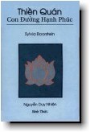

|
BuddhaSasana Home Page |
Vietnamese, with Unicode Times font |
|  |
Thiền Quán, Con Đường Hạnh PhúcNguyễn Duy Nhiên It's Easier Than You Think |
|
Phần 3 Những Chướng Ngại Cho Cái Nhìn Sáng Tỏ -ooOoo- Nhà Phỏng Vấn và Vị Đạo Sư* Có lẽ đây là một dấu hiệu của thời đại mới, nhưng tôi cũng đã thu đạt được một vài bài học tâm linh qua các chương trình đàm thoại trên ti-vi. Tôi còn nhớ một hôm xem Larry King phỏng vấn một vị đạo sư thuộc truyền thống Ấn Độ giáo. Tôi không nhớ chính xác những gì vị đạo sư nói, nhưng tôi nhớ rất rõ cái phong cách thư thái và điềm tĩnh của ông. Mặc dù những khán giả gọi vào chất vấn ông thường là để bài bác hoặc, ít nhất, là cũng hoài nghi, vị đạo sư vẫn giữ một sự có mặt trong sáng và an lạc, trả lời cho từng câu hỏi một cách rõ ràng, chính xác và đôi khi còn pha thêm chút khôi hài. Larry King là một nhà phỏng vấn nổi danh với những câu hỏi thẳng thừng và soi mói của ông. Có một lúc ông hơi chồm qua bàn viết và nhìn vào đôi mắt không hề chớp của vị đạo sư. Ông hỏi, "Làm cách nào ngài lại có thể giữ cho nó được tĩnh lặng trong ấy đến thế?" Vị đạo sư trả lời, "Trong ấy bao giờ cũng tĩnh lặng. Nhưng tại vì chúng ta quấy động chúng lên nhiều quá đó thôi!" Đây là một thử nghiệm mà bạn có thể làm ngay bây giờ, trong không gian riêng tư của nhà bạn, để chứng minh được những gì vị đạo sư ấy nói là đúng. Chọn một thời gian nào đó khi bạn được ở một mình và cơ thể được khoẻ khoắn, hay ít nhất thì cũng không có một sự khó chịu nào trong thân. Tốt nhất là mình không đang đói và cũng không buồn ngủ. Tìm một chiếc ghế nào mà bạn ngồi cảm thấy dễ chịu nhất. Ngồi xuống trong chiếc ghế ấy. Thọ hưởng cái cảm giác dễ chịu. Bạn có thể nhắm mắt lại nếu muốn, hoặc mở ra, nhìn chung quanh và thưởng thức cái nhìn chung quanh ấy. Thọ hưởng cái cảm giác dễ chịu. Đừng làm một việc gì khác, hãy thưởng thức cái cảm giác dễ chịu ấy. Giữ ít nhất là mười lăm phút để thọ hưởng cảm giác dễ chịu trước khi bạn lật sang trang kế tiếp. Khi nào xong, bạn hãy đọc trang bên. ----- * ----- * Thế nào, bạn có cảm thấy dễ chịu trong trọn mười lăm phút ấy không? * Bạn có ngồi và thọ hưởng cái cảm giác thư thái và dễ chịu ấy không? * Mất bao lâu thì có những tư tưởng khác khởi lên làm quấy rối sự dễ chịu của bạn? * Những tư tưởng ấy là gì? * Bạn có những tư tưởng ham muốn nào không? * Bạn có tự nghĩ rằng, "Phải chi mình đã chọn một chiếc ghế nào khác thoải mái hơn chiếc ghế này. Chiếc ghế này chưa phải là cái mà mình ưa nhất. Lần tới nếu có thử nghiệm lại, mình sẽ chọn một chiếc ghế khác thoải mái hơn"? * Bạn có những tư tưởng khó chịu không? Như là, "Chà, ông hàng xóm của tôi giờ này lại đi chạy máy cắt cỏ. Mình đã có thể ngồi yên đây thoải mái, an lạc trong mười lăm phút rồi, nếu không có tiếng máy chạy ồn ào ngoài kia." * Bạn có những tư tưởng bồn chồn không? "Ái chà, ngồi yên đây cũng không dễ chịu như mình nghĩ tưởng. Có lẽ mình nên thử đi bộ một vòng quanh xóm. Mình lại quên mất gọi điện thoại trả lời cho chị Quận. Lẽ ra mình phải gọi cho chị trước khi ngồi xuống, và bây giờ lại lo lắng không biết chị nghĩ sao về mình. Nếu lỡ chị ta giận vì mình không gọi lại đúng hẹn thì sao đây?" * Bạn có bắt đầu cảm thấy ngủ gục không? Bạn có nghĩ rằng, "Cái này thì chán chết được. Cái này có lẽ thích hợp cho mấy ông đạo ở Ấn Độ, chứ nếu ngồi thiền là như vậy thì chắc chắn không phải là cho tôi rồi. Có lẽ mình nên ngủ một chút cho hết mười lăm phút." * Bạn có nghĩ rằng, "Đây là một bài tập hết sức ngớ ngẩn. Như vầy thì có mắc mớ gì đến việc giác ngộ chứ? Mình biết là mình đã dại dột đi mua quyển sách này. Mình thì lúc nào cũng hay làm những chuyện như vậy - có những quyết định khờ khạo, nhất thời." * Bạn có những ý nghĩ như trên không? Một vài tư tưởng giống như thế? Hay có hết tất cả? ----- * ----- Trên căn bản thì vị đạo sư nói đúng: nó yên lặng bên trong ta, cho đến khi nào bị khuấy động lên. Nhưng sự khuấy động ấy không có một chủ đích hoặc một sự cố ý nào. Chúng ta đâu ai muốn gây thêm phiền phức cho cuộc sống của mình làm gì. Nó cũng không phải là vì tâm của riêng mình hư đốn: tâm của người khác cũng không giữ được yên lặng gì hay hơn ta. Tính chất tự nhiên của tâm là hay bị quấy động lên bởi những năng lượng lăng xăng, như những ngọn gió thổi qua lại trên một mặt hồ nước trong, làm gợn sóng lao xao, chúng che khuất đi sự trong sáng của hồ nước. Thực hành thiền tập không có nghĩa là ta sẽ làm ngưng những làn sóng gợn ấy. Có lẽ những bậc thiền sư giác ngộ, họ có thể lúc nào cũng nhìn xuyên qua được những làn sóng lăn tăn đó. Nhưng những người học đạo bình thường như tôi, nếu có thể nhớ được chúng chỉ là những gợn sóng mà thôi, và mặt, hồ còn một phía bên kia nữa, là hạnh phúc lắm rồi. -ooOoo- Tâm Thức và Thời Tiết * Chúng ta thường tự kể cho mình nghe những mẩu chuyện, mà ta cứ lập đi lập lại không biết bao nhiêu lần. Rồi chúng ta tự làm cho mình hoang mang và sợ hãi, quên rằng nỗi sợ và lo âu ấy bao giờ cũng là về một cái gì có thể đã xảy ra hoặc có thể chưa xảy ra nhưng bây giờ thì không xảy ra. Chúng ta cũng thường quên là những gì đang xảy ra bây giờ, chúng cũng sẽ không kéo dài lâu lắm đâu! Vài năm trước đây tôi có đến hướng dẫn một khóa thiền tại thành phố Albuquerque. Trong thiền đường của chúng tôi có một khung cửa sổ rất lớn, chiếm gần hết trọn một vách tường. Từ chỗ tôi ngồi, tôi có thể nhìn ra bên ngoài thấy một cánh đồi rộng lớn chạy dài ra tới tận rặng núi Sangre de Cristo thật đẹp ở xa xa. Tôi chợt nhận thấy thời tiết bên ngoài, thổi lồng lộng qua cánh đồi mênh mông, dường như nó thay đổi rất nhanh chóng từ đầu cho đến cuối mỗi giờ ngồi thiền của chúng tôi. Khi tôi nhắm mắt lại, mặt trời có thể còn đang soi sáng, và khi tôi mở mắt ra bốn mươi lăm phút sau, có thể là một cơn bão tuyết đang quay cuồng ngoài kia. Khi tôi nhắm mắt lại, bên ngoài trời đang đổ tuyết, tôi có thể mở mắt ra và thấy trời đã chuyển sang mưa. Và rồi, dường như chỉ trong chốc lát, mặt trời lại hiển lộ ra, nhưng bên ngoài có gió lộng quay cuốn quanh tòa nhà chúng tôi ở. Rồi đột nhiên gió lặng yên, một ánh nắng hoàng hôn màu hồng phủ lấy núi đồi đẹp một cách huyền diệu, và từng bông tuyết nhẹ nhàng rơi trong thinh lặng. Tôi tự nghĩ, "Thời tiết ngoài kia cũng giống như tâm ta vậy." Tôi nhìn nhóm thiền sinh độ hai mươi lăm người ngồi chung quanh tôi, thân của mọi người ngồi thật yên và gương mặt của họ tĩnh lặng. Và vì tôi biết chút ít về mỗi thiền sinh và biết nhiều về tôi, tôi hiểu những gì tôi thấy chỉ mới là phân nửa của sự thật mà thôi. Tôi tưởng tượng đến một tấm tranh khôi hài như sau. Tôi vẽ ra trong đầu một hình ảnh có năm thiền sinh đang ngồi thiền. Họ quấn người chặt trong chăn và khăn choàng, mắt nhắm, vẽ mặt an lạc, chỉ khác biệt nhau về vóc dáng mà thôi. Gương mặt của mọi người đều y như nhau. Và phía trên đầu mỗi người là một vòng tròn nhỏ, vẽ những hình ảnh tiêu biểu cho những gì thật sự đang có mặt trong đầu của mỗi người. Tôi tưởng tượng trong một vòng tròn có chứa đầy hình ảnh của những thức ăn như là kem, bánh ngọt, một tô mì nóng hổi. Một vòng tròn khác là hình của bãi biển Hạ Uy Di với hàng dừa tha thướt. Một vòng tròn nữa là hình của đôi tình nhân tình tự với nhau (mặc dù tôi không biết phải vẽ sao cho tế nhị một chút.) Còn một vòng tròn là hình ảnh chiến tranh, hoặc con người đánh giết nhau, hoặc đầy những ký hiệu #&*@#$% biểu thị cho những từ ngữ không thích hợp mà người ta dùng để mắng nhiếc nhau. Một vòng tròn khác đầy tối tăm và mù mịt. Một vòng tròn nữa có vẽ hình sấm sét, hoặc có lẽ thêm vào một ngọn núi lửa đang phun trong khung cảnh ấy. Một vòng tròn khác là một người có vẻ mặt hoang mang đang nhún vai, hai bàn tay mở ra và đưa lên trời, ý diễn tả "Tôi không biết." Có lẽ vòng tròn "tôi không biết" ấy sẽ được vẽ trên một nền đầy những dấu hỏi. Và rồi tôi tưởng tượng thêm hình một thiền sinh thứ sáu, trên đầu anh là một vòng tròn mà không có gì trong ấy hết. Điều m à tôi muốn nói về bức tranh khôi hài ấy không phải là người có vòng tròn trống không là một người may mắn. Thật ra, tôi có một ước mơ là sẽ viết một cuốn sách mà trong đó mỗi trang đều có cùng mỗi một bức tranh ấy. Bức tranh cũng vẽ có bấy nhiêu đó người quấn mền ngồi thiền trông thật yên, gương mặt của họ không hề biến đổi. Chỉ có nội dung của những vòng tròn tượng trưng cho ý nghĩ của họ là thay đổi mà thôi. Và cũng chỉ có bấy nhiêu đó ý nghĩ nhưng nó sẽ di chuyển vòng vòng hết người này sang người kế. Cùng một người nhưng có nhiều tướng trạng tâm thức khác nhau. Mỗi tướng trạng của tâm thức đến rồi đi. Dù cho đó có là sự tĩnh lặng cũng vậy.Mỗi cá nhân đều sẽ kinh nghiệm hết tất cả mọi năng lượng khác nhau trong tâm mình, đó là những trận bão có thể đoán trước được trong tâm thức con người. Chúng phản ảnh những sự thăng trầm của năng lượng trong ta, cũng như phản ứng của tâm ta đối với những kinh nghiệm dễ chịu và khó chịu. Tất cả đều là hoàn toàn tự nhiên. Chúng không có gì để ta phải sợ hãi hoặc cảm thấy là chướng ngại hết. Nếu chúng ta sang sống ở một hành tinh nào khác, ta sẽ muốn có ai báo trước cho biết thời tiết nơi ấy như thế nào, để ta có thể lo mà chuẩn bị trước. Con người trên hành tinh này cũng vậy, sự sống của ta sẽ được dễ dàng hơn nếu ta biết cách đối phó với mọi sự bất ngờ của thời tiết, chung quanh ta cũng như là trong ta. -ooOoo- Những Tâm Thức Chướng Ngại Chỉ Có Bấy Nhiêu Thôi * Trong kinh điển Phật giáo năm năng lượng của dục lạc, sân hận, dã dượi, xao động và hoài nghi được gọi là "Ngũ Trần Cái" tức là năm loại ngăn che của tâm. Chúng được gọi là những loại ngăn che của tâm vì chúng làm mờ mịt cái thấy sáng suốt của ta, cũng giống như những trận bão cát trong sa mạc, hoặc sương mù trên đường đi, có thể làm cho người lữ hành bị lạc lối. Chúng ngăn trở không cho ta tiếp xúc được với cái tự tánh thanh tịnh của mình. Chúng làm ta điên đảo. Ta nhận đó cho là thật, và quên rằng tự tánh của mình không phải chỉ là một trận bão đi ngang qua. Trận bão lướt qua thì sẽ chỉ là một trận bão lướt qua. Còn chân tánh thì bao giờ cũng vẫn là cái chân tánh trong ta muôn đời sáng tỏ. Năm loại năng lượng khác nhau ấy thật ra là chỉ có bấy nhiêu thôi, nhưng chúng lại được cải trang qua biết bao nhiêu là bộ mặt khác nhau. Bánh kem thì khác với bánh pizza và khác với lại tình dục, nhưng trên cơ bản thì tất cả chúng đều là những đối tượng của ái dục. Cùng một năng lượng của sân hận đã cung cấp nhiên liệu cho sự bực tức của ta đối với người hàng xóm vặn nhạc quá lớn, và sự bất mãn của ta với một vị tổng thống bất tài. Tâm càu nhàu nào thì cũng chỉ là tâm càu nhàu; tâm buồn ngủ là tâm buồn ngủ; tâm xao động là tâm xao động; tâm hoài nghi là tâm hoài nghi. Sự kiện là trong tâm ta sẽ có những trận bão tố khởi lên và qua đi, điều ấy không phải là một vấn đề. Sống ở một nơi mà thời tiết thay đổi luôn luôn cũng không phải là vấn đề. Nhưng dù sao đi nữa, ta phải biết mặc đồ cho thích hợp với các loại thời tiết khác nhau, và có đủ khôn ngoan để ở trong nhà khi ngoài trời dông tố. Và ta cũng nên nhớ là thời tiết nào rồi cũng sẽ thay đổi. Những tâm thức khó khăn của ta chỉ trở thành vấn đề khi nào ta thật sự tin rằng chúng sẽ tiếp tục mãi mãi. Rồi từ đó, vì chúng là những năng lượng bất an, ta đâm ra sợ hãi. Chúng ta có hai loại sợ hãi. Một là nỗi sợ rằng những gì đang xảy ra bây giờ, chúng sẽ tiếp tục mãi mãi. Điều đó hoàn toàn là không thật - không có gì có thể tiếp diễn mãi mãi được. Nỗi sợ thứ nhì là mặc dù nó sẽ không tiếp diễn mãi mãi, nhưng nỗi đau đang có mặt sẽ mãnh liệt đến mức ta không thể nào chịu đựng được. Và nỗi sợ thứ hai này có tàng chứa một chân lý rất sâu sắc. Ta không bao giờ có thể chối bỏ được là trong cuộc đời này, tấm thân ta có thể bị nhiều đau đớn, những mối tương giao của ta có thể sẽ mang lại khổ đau, sẽ có những lúc ta cảm thấy một nỗi đau thật lớn. Nhưng mặc dù vậy, tôi nghĩ là chúng ta đã tự coi thường mình, chúng ta đã đánh giá mình hơi thấp. Đôi khi cuộc đời có thể có nhiều đau đớn, nhưng tôi tin rằng chúng ta có một khả năng chịu đựng rất to tát. Vì chúng ta hay hoảng hốt lên mỗi khi vừa có một ngọn gió chướng ngại nào nổi lên trong tâm thức, nên ta thường chống cự lại với nó. Chúng ta hoặc là cố gắng thay đổi nó hoặc muốn loại trừ nó đi. Tình trạng rối loạn và dằn co ấy lại càng làm cho tâm trạng ta trở nên khốn khó hơn. Việc ấy cũng giống như một cảnh của chú mèo Daffy, một nhân vật trong phim hoạt họa của trẻ con, đang thong dong đi trên đường, đột nhiên đạp nhằm một đống kẹo dẻo mạch-nha. Trong cơn vội vã, vụng về cố gắng tự giải cứu mình, chú ta té tới, té lui và cuối cùng toàn thân bị dính cứng trong đống kẹo dẻo ấy, không thoát ra được. Trong hoàn cảnh ấy, ngay cả trẻ con cũng còn thấy được giải pháp nào mới là đúng. Giải pháp hay nhất là một thái độ nhận diện không hoảng sợ. "Đây là kẹo dẻo mạch-nha. Tôi không thấy nên dẫm vào, nhưng bây giờ thì biết là mình đang bị kẹt. Nhưng nó chỉ là kẹo mach-nha mà thôi. Cả thế giới này đâu phải làm toàn bằng kẹo mạch-nha. Và bây giờ thì hành động nào là khôn ngoan nhất?" -ooOoo- Ăn Xúp Bằng Nĩa * Chúng ta tự tạo nên những vấn đề rất to tát vì không thấy được những năng lượng bất an của tâm, nhất là khi chúng ẩn núp dưới hình dạng của những câu chuyện. Chúng cũng giống như những đứa trẻ con nhà láng giềng hóa trang làm những con ma vào ngày lễ Halloween. Khi chúng ta mở cửa ra và thấy đứa bé hàng xóm phủ một tấm vải trắng để đi xin kẹo, mặc dù nó trông giống như một con ma, nhưng ta vẫn biết đó chỉ là đứa bé nhà láng giềng mà thôi. Và khi tôi nhớ những biến cố trong đời mình chỉ là những năng lượng của tâm núp dưới tấm vải trắng của một câu chuyện, tôi có thể tiếp xử với chúng một cách ưu ái hơn. Dưới đây là một bài thực tập để chứng tỏ cho thấy chính cái trạng thái tâm thức của ta, chứ không phải việc gì xảy ra, đã quyết định cho kinh nghiệm của mình: Trường Hợp Thứ Nhất Bạn đang có liên hệ tình cảm với một người nào đó, và mối tương giao bắt đầu có dấu hiệu đổ vỡ. Bạn và người kia, cả hai đều thất vọng vì mối tình đã không thành. Người này cảm thấy bất mãn và tức giận với người kia vì họ đã không giống như người mình mơ ước. Cả hai quyết định cùng gặp nhau một lần chót để giải quyết cho dứt khoát. Hai người bỏ một ngày rủ nhau đi ra biển để lánh xa hết tất cả. Nhưng khi ngày trôi qua, mỗi người lại chỉ nhớ đến những đau đớn, thất bại trong mối tương giao giữa đôi bên. Bạn cảm thấy tức giận và đuối sức. Trên đường về, vì cả hai cảm thấy đói, bạn dừng lại tại một quán ăn chiều. Người tình cũ của bạn ăn xúp bằng nĩa. Bạn tự bảo lòng, "Cái này thì còn thật là tệ hơn là mình nghĩ! Tên khờ này lại còn đi ăn xúp bằng nĩa!" Trường Hợp Thứ Hai Bạn cảm thấy yêu tha thiết. Người kia cũng yêu bạn đắm say. Cả hai bỏ một ngày đi ra biển chơi. Bạn nằm tắm nắng, đọc truyện tình, đùa giỡn trên sóng, âu yếm với nhau. Trên đường về, cả hai cảm thấy đói nên bạn dừng lại tại một nhà hàng. Người thương của bạn ăn xúp bằng nĩa. Bạn tự bảo lòng, "Trông thật là đáng yêu! Ăn xúp bằng nĩa!" Tôi nghĩ có lẽ đó là ý nghĩa của câu "Chúng ta tự tạo nên thực tại của chính mình." Tôi thường có khó khăn về ý nghĩa của câu ấy, lần đầu tiên khi tôi nghe nói vào thập niên bảy mươi. Vì dầu cho có cố gắng đến đâu, tôi vẫn không thể nào tạo được một thực tại là ngày mai mặt trời sẽ mọc ở phương Tây, và tôi cũng không thể nào chữa lành cho những người tôi thương bị mắc bệnh nan y, như một phép lạ. Nhưng có một thực tại mà tôi có thể tạo được - là cái quan điểm của tôi về bất cứ một vấn đề nào. -ooOoo- Ái Dục * Theo kinh điển nhà Phật thì năng lượng của lòng ái dục đứng đầu hết trong danh sách của các tâm thức chướng ngại. Trước hết nó là một loại năng lượng có nhiều thử thách và khá lý thú, vì danh từ ái dục tự nó có hàm chứa một ngụ ý dâm ô. Ví dụ khi một người nói là họ đang có ái dục về một cái gì, chắc chắn là chúng ta không ai lại nghĩ là họ muốn nói tới bánh kẹo hoặc là một tô phở. Ái dục có tính cách hổ thẹn. Có lần, trong một lớp dạy về các năng lượng khó khăn trong tâm, tôi hỏi các thiền sinh là năng lượng nào đã gây nhiều khó khăn nhất trong cuộc sống của mỗi người. Khi chúng tôi đi vòng quanh phòng, phần đông đều phát biểu rằng lòng thù ghét hoặc sân hận là một chướng ngại khổ sở nhất đối với họ. Dường như ai cũng có thể chấp nhận được điều ấy dễ dàng, và nó cũng không có gì là lạ hoặc gây khó chịu cho người nghe. Cuối cùng, có một người đàn ông phát biểu, "Thật ra thì tôi nghĩ lòng ái dục là gây cho tôi nhiều khó khăn nhất." Mặc dù không ai nhúc nhích, nhưng tôi thấy dường như có một sự ngượng ngùng rõ rệt. Có những tiếng cười rụt rè, khúc khích phá lên khắp nơi trong phòng. Đột nhiên, người đàn ông dễ thương, đáng kính và thành thật ấy, lại như có một cái gì bất thiện phủ trùm lên ông. Mặc dù trong kinh điển có đề cập đến lòng ái dục như là một năng lượng nhục dục, nhưng theo tôi nghĩ chúng ta nên hiểu rằng đó là một năng lượng tham muốn về bất cứ một đối tượng nào cũng vậy. Nó là cái năng lượng của cảm nghĩ là ta sẽ không thể nào có hạnh phúc trừ khi mình phải có được một cái gì đó. Nó là một cảm giác thiếu thốn trong tâm. Bạn có bao giờ có cảm giác ấy không? Bạn đứng dậy, đi lại mở cửa tủ lạnh rồi đứng đấy nhìn vào, bạn đứng đó với cánh cửa tủ lạnh mở toang, bạn không biết là mình thật sự muốn gì nữa, nhưng bạn có cảm giác là mình muốn một cái gì đó. Nó cũng chính là cái năng lượng đã xúi dục chúng ta đột nhiên phải vặn ti-vi lên, và dùng chiếc máy bấm để đổi hết đài này sang đài kế, may ra có một cái gì đó hay ho đang xảy ra chăng! Tâm thiếu thốn thì chỉ là một tâm thiếu thốn, và nhiều khi nó xuất hiện mà không cần đến một sự đòi hỏi nào của sinh lý. Mấy năm trước đây khi đứa cháu gái của tôi lên hai tuổi, em trai của nó chào đời. Bà nội của nó và tôi đến ở với nó đêm má nó phải vào nhà thương. Chúng tôi lo cho nó hết sức chu tất. Nó cũng rất thân với chúng tôi, và cả hai bà ngoại, nội hoàn toàn dành hết tất cả cho sự an vui của cháu. Mặc dù vậy, trong suốt buổi tối hôm ấy, rõ ràng là nó đã cảm thấy sự vắng mặt của má nó. Nó bảo, "Cháu muốn uống nước cam," và chúng tôi đi lấy nước. Rồi nó đòi, "Cháu muốn ăn một miếng bánh," và chúng tôi lại cho nó bánh. Một hồi sau nó lại nói, "Bây giờ cháu muốn đọc sách," và tiếp theo là "Cháu muốn đồ chơi. Cháu muốn búp bế. Cháu muốn ăn táo." Đến một lúc, tôi và bà nội nó nhìn nhau và hiểu là đứa cháu gái mình chỉ cảm thấy cần một cái gì đó thôi. Bà nội của nó nói, "Chắc là nó nhớ mong một cái gì." Đứa cháu gái tôi cảm nhận cái năng lượng của sự nhung nhớ về một cái gì mà nó không biết rõ. Và lẽ dĩ nhiên, nó đâu có khả năng để nói là "Cháu cảm thấy cái năng lượng của sự cần thiết và ham muốn, nhưng cháu không biết là mình đang cần cái gì." Đôi khi cái tâm ngh èo túng ấy khởi lên để đáp ứng lại một sự thiếu thốn trong lòng, như trong trường hợp của đứa cháu gái tôi. Nhưng cũng có đôi lúc dường như nó xuất hiện thật vô cớ. Thật ra cũng không phải hoàn toàn là vô cớ đâu! Thường thì đó là những phản ứng tự nhiên của ta khi tiếp xúc với những gì mình ưa thích. Như có bao giờ bạn đi ngang qua một tiệm bánh và trở nên ý thức đến một mùi bánh thơm thoang thoảng bay ra không? Trước khi bạn ngửi thấy mùi bánh ấy, bạn không đói bụng. Bây giờ thì đột nhiên một cơn đói bụng ghê gớm chợt nổi dậy. Điều này không phải là một sự kiện gì quái lạ hết, vì đường lối vận hành bình thường của tâm là như vậy. Mỗi khi tiếp xúc với những kinh nghiệm dễ chịu, tham muốn sẽ khởi lên. Mà hành động theo sự ham muốn cũng không nhất thiết là sai bậy, vì đôi khi những ham muốn ấy cũng rất lành mạnh, đặc biệt là những ham muốn của cảm thọ. Ta không thể khờ khạo mà nghĩ rằng mỗi khi cảm thấy đói bụng chúng ta chỉ cần nói, "Cái này chỉ là lòng ham muốn khởi lên mà thôi" và rồi không cần phải làm gì hết. Và cũng vậy, khi ta giả vờ như không biết đến những cảm giác dục tình, thay vì chọn những biện pháp khéo léo, có ý thức để đối trị nó, thì kết quả cũng sẽ không tốt đẹp gì hơn. Sự ham muốn của cảm thọ là những năng lượng đều đặn và thường xuyên tràn lấn tâm ta và bắt giữ sự chú ý của ta. Chọn những ham muốn lành mạnh của cảm thọ là một phần trong cuộc sống được làm bằng những tương giao của ta với thế giới chung quanh này.Cũng có những ham muốn phức tạp hơn là những nhu cầu rõ rệt của sinh lý như là về thực phẩm hoặc tình dục chẳng hạn. Đó là lòng ham muốn về những kinh nghiệm thú vị. Tôi hay thích đọc tạp chí Smithsonian. Mỗi tháng tôi nhận được một tờ báo mới gởi đến tận nhà, và phía bìa sau là những hình quảng cáo về những chuyến du lịch không tưởng đến những nơi thật xa xôi. Có lúc bất ngờ tôi thấy mình thật sự dự tính cho một cuộc du hành mười bảy ngày đến Bắc Cực. Năm phút trước khi đọc trang quảng cáo ấy, tôi không hề nghĩ đến bất cứ một chuyến đi xa nào hết. Mà trong đời tôi, cho đến giây phút ấy, tôi cũng không hề có một ý thích gì đến thăm viếng miền Bắc Cực. Vậy mà đùng một cái, tờ quảng cáo hấp dẫn đã khiến tôi thật sự xem xét giá tiền của chuyến đi và tự hỏi không biết mình có sắp đặt được thời giờ để tham gia không. Những loại sách liệt kê các món hàng và những tài liệu quảng cáo gởi qua đường bưu điện cũng có thể khích động được năng lượng của ái dục trong ta. Mỗi ngày tôi đều nhận được những tập sách quảng cáo về những món hàng mà tôi không bao giờ cần đến. Những trang bìa được trình bày rất hấp dẫn khiến lần nào tôi cũng quyết định là mình cũng nên xem qua thử một chút. Và khi đọc vào rồi, thế nào tôi cũng tìm thấy một món đồ đặc biệt nào đó mà tôi phân vân không biết mình có cần không. Hoặc là nghĩ, có thể cá nhân mình không cần, nhưng nó sẽ rất thích hợp cho một người quen nào đó. Mặc dù chưa đến ngày sinh nhật của họ. Tôi bắt đầu nghĩ đến khi nào là sinh nhật họ, hay là để dành món quà ấy cho một dịp lễ nào khác. Tất cả những chuyện ấy thật ra cũng dễ hiểu, vì đường lối vận hành của tâm là mỗi khi tiếp xúc với một kinh nghiệm dễ chịu, chúng ta sẽ cảm thấy một sự lôi kéo, một năng lực ham muốn, và tâm ta sẽ chạy theo hướng của những kinh nghiệm cảm thọ dễ chịu ấy. Và đôi khi dù không có một kinh nghiệm lý thú nào có mặt, tâm ta cũng vẫn có đầy đủ khả năng để gợi lại những hình ảnh trong quá khứ, và rồi tham muốn chúng. Tôi rất ngạc nhiên khi khám phá ra tâm ta lại có thể ham muốn thật nhiều mặc dù đang sống trong tu viện. Tôi đã bỏ ra rất nhiều thời gian trong những tu viện để thực tập thiền quán. Thực phẩm ở đây thì rất đơn sơ, và hoàn cảnh không hề cho phép ta có những sinh hoạt gì nhiều. Mặc dù vậy, tôi cũng đã phác thảo ra trong đầu, toàn bộ một nhóm y phục rộng rãi và thoải mái mà tôi có thể mặc để đi tham dự một khoá tu trong một tương lai viển vông nào đó. Tôi tưởng tượng sẽ đan cho mình một tấm mền ấm hơn. Tôi phác họa trong đầu sẽ mua một chiếc đòn gỗ hoặc một tọa cụ khác, ngồi thoải mái hơn cái mà tôi đang có. Mặc dù những nguyên nhân gây nên sự tham muốn ở đây thì rất là ít ỏi, nhưng tâm tôi vẫn cứ hoạt động tối đa. Tôi tưởng tượng kinh nghiệm tu tập của mình sẽ có nhiều thành quả hơn, nếu họ làm đồ ăn sáng ngon hơn hoặc mua một hiệu trà khác hơn. Tùy ở sự tu tập của tôi ngày hôm ấy tốt đẹp đến đâu, tôi có thể thấy mình nghĩ đến thực đơn của buổi ăn chiều, ngay sau khi vừa ăn trưa xong. Nhưng tôi không hề nghĩ là tâm tôi động loạn gì nhiều hơn bất cứ một ai khác. Tánh tự nhiên của tâm là luôn luôn nhìn về phía chân trời, tìm kiếm những kinh nghiệm nào khả dĩ có thể đem lại sự thú vị cho nó, và rồi bám chặt vào đó. Đó là tình trạng bị điều kiện của chúng ta. Và đôi khi năng lượng của sự ham muốn trong tâm sẽ khiến cho ta đột nhiên biết yêu. Khi tâm và thân ta tràn ngập năng lượng của ái dục, người khác đối với ta tự nhiên sẽ trở nên hấp dẫn hơn. Chúng ta vẽ vời nên những hình ảnh mơ mộng lãng mạn hoặc gợi tình về người khác, mà không cần biết họ là người như thế nào, chỉ dựa ở nơi tâm ta lúc ấy cảm thấy ra sao. Đây là một hiện tượng đặc biệt rất khó đối trị. Nó xảy ra rất thường trong những khoá tu khi mọi người tuyệt đối nguyện giữ thinh lặng, và vì vậy họ không thể nào xét đoán được người khác xem có hợp với mình không. Họ cảm thấy kích thích trong tâm và thân, và đột nhiên bị xúc động mạnh, giống như là họ vừa biết yêu một người mà mình không hề quen biết, chỉ dựa trên cách cô nàng ta đi vào thiền đường hoặc nhìn anh chàng ta ăn mà thôi. Chính tôi cũng đã từng cảm thấy phải lòng yêu những người đâu đâu chỉ vì họ vô tình bước vào tầm nhìn của tôi, khi tôi đang cảm thấy vui thú hoặc đang ngập tràn với năng lượng của ái dục. Tôi cũng đã mơ tưởng ra những hình ảnh bỏ trốn theo những người xa lạ ấy. Cả sự việc rất là buồn cười và không thực, vì tôi đã có chồng và hoàn toàn không hề có một tình ý nào khác với bất cứ ai. Và những người mà tôi cảm thấy "yêu", tôi cũng có biết chút ít về họ, họ hoặc đã đính hôn hoặc cũng đã có gia đình. Cả chuỗi sự kiện ấy hoàn toàn chỉ là những mơ tưởng vô vọng. Nhưng dù vậy, tâm ta cứ bám vào vấn đề ấy và quyết định rằng đây là một mối tương giao quan trọng nhất trong đời mình, đây là người bạn đời tâm linh mà mình hằng tìm kiếm. Nghĩ cũng đáng sợ khi thấy tâm ta lại có thể dựng lên cả một tấn tuồng từ một năng lượng rất đơn sơ của thân và tâm. Khi năng lượng của ái dục phát khởi lên, chúng ta nhìn chung quanh, và đùng một cái cho rằng, "Cái này là cái mà mình đang cần đây!" Thật ra nó cũng không phải là một vấn đề, mà là khôi hài thì đúng hơn. Nó chỉ trở thành một vấn đề khi ta thiếu chánh niệm, khi ta quên đi và cho đó là thật. Nhưng không phải là tôi muốn khuyên bạn không nên yêu. Biết yêu nhiệm mầu lắm chứ! Tôi chỉ muốn nói là khi ta yêu, ta nên từ tốn một chút để có thể biết chắc người mà ta yêu không phải đơn giản chỉ là một nhân vật được tạo dựng nên bởi lòng ham muốn của chính mình. Giáo lý của Phật dạy về ái dục có lẽ cũng tương tự với một huyền thoại của Âu Châu, là nếu bạn nuốt trọn trái tim của một con gà, bạn sẽ phải lòng yêu và sống trọn đời với bất cứ một người nào mà bạn sẽ gặp ngay sau đó. Thật ra tôi nghĩ có lẽ chuyện ấy cũng đã thật sự xảy ra cho rất nhiều người. Sau khi đã nuốt trọn một trái tim và đang ở trong một trạng thái gợi tình, bất cứ một người nào mà họ gặp tiếp đó sẽ thấy hấp dẫn hơn. Là một thiền sinh có nghĩa là ta tạo cho mình một khoảng không gian trong tâm, để ta có thể tỉnh táo và thấy được thế nào một phản ứng lành mạnh và vững vàng. Một liều thuốc có khả năng hóa giải được chướng ngại về ái dục là sự kiềm chế. Thái độ kiềm chế trong thời đại ngày nay nghe có vẻ lạc hậu quá. Tôi cũng cảm thấy hơi ngượng một chút khi sử dụng danh từ ấy, vì tôi thấy bắt đầu giống bà Nội mình rồi đó, đối với cụ thì chỉ cần nói một số chữ khiếm nhã thôi cũng đủ là hành động bất luân rồi. Nhưng kiềm chế là một danh từ rất hay. Nó có nghĩa là ta biết chờ đợi lâu đủ để thấy được hai việc xảy ra. Việc thứ nhất là ta hy vọng sẽ thấy rõ được đối tượng của sự ham muốn có lành mạnh không, và hành động theo nó có hợp luân lý, có trách nhiệm và đúng đắn hay không. Và việc thứ hai sự chờ đợi có thể cho phép ta thấy được là ham muốn tự nó chỉ là một năng lượng của tâm mà thôi. Đó là một loại năng lượng đi tô màu cảm giác ta và thúc đẩy hành động của ta. Nhưng khi đã biết nó chỉ là một loại năng lượng, ta sẽ hiểu nó không hề có quyền năng bắt ta phải hành động. Nó không phải là một mệnh lệnh, chỉ là một lời đề nghị mà thôi. Nếu sự ham muốn là lành mạnh và đúng lúc, ta có thể quyết định sẽ hành theo. Và nếu sự ham muốn là bất thiện và không đúng lúc, ta có thể tự kiềm chế lại, và năng lượng ấy chắc chắn rồi sẽ qua đi. -ooOoo- Liều Thuốc Giải Trừ Ái Dục * Sau đây là một câu chuyện ngụ ngôn ví dụ cho ta thấy năng lượng của ái dục có thể bị khắc phục được bằng sự tu tập định tâm. Cũng như những chuyện cổ tích khác, câu chuyện ngụ ngôn này đã được khẩu truyền qua nhiều thế hệ. Tôi không biết nguồn gốc của nó, nhưng tôi nghe lại từ một người bạn, và chị ta đã được nghe từ vị giáo sĩ Do Thái Zalman Schachter-Shalomi. Thế nên, bây giờ thì đây là một câu truyện Phật giáo nhưng có nguồn gốc từ Do Thái giáo vậy. Ngày xưa thật xưa, trước khi chúng ta quá khôn ngoan, ở một vùng đất nọ, nơi mà vẫn còn những cô công chúa thật đẹp với trái tim còn đang say ngủ và những chàng trai khờ khạo, có một anh thanh niên đem lòng yêu thương một cô công chúa miền xa. Lòng ái dục về nàng công chúa đã ngập tràn tim anh. Chàng thanh niên ấy tin chắc rồi sẽ có một ngày họ được gặp và thành hôn với nhau. Anh ta còn tưởng tượng là mình sẽ trở thành một người cha của một bầy con đông đảo. Rồi một hôm trong một chuyến đi, cô công chúa cùng đoàn tùy tùng đi ngang qua nơi anh đang sống. Và chàng thanh niên khờ dại ấy bị lòng ái dục làm mù quáng, nhào ra khỏi đám đông, quỳ xuống trước chân cô công chúa và kêu lên, "Chừng nào chúng ta mới sẽ được sống bên nhau?" Cô công chúa với giọng khinh khi nhìn anh thanh niên nói, "- trong nghĩa địa!" Ý của cô là "Không bao giờ là trong kiếp này, tên ngốc kia!" Nhưng anh thanh niên lại tiếp nhận lời ấy như là một mệnh lệnh, anh ta tìm đến một nghĩa địa và chờ ở đấy. Anh chờ và chờ và tiếp tục chờ. Thời gian hoàn toàn là vô nghĩa đối với anh. Anh chỉ có một mục đích duy nhất và một con tim không biết lay chuyển. Và anh tiếp tục chờ đợi... Bổng một ngày nọ, tâm anh trở nên thật bình lặng và tập trung đến mức toàn thân tâm anh ngập tràn niềm vui và ánh sáng, nó xua tan hết mọi hận thù và nhỏ nhen. Anh cảm thấy yêu thương hết tất cả mọi người, mọi loài không phân biệt. Và người chung quanh cũng cảm nhận được tình thương bao la ấy của anh, họ rủ nhau tìm đến để được anh ban ơn phước. Và anh vẫn tiếp tục chờ đợi... Anh cũng đã nhiều lần được gặp thần Chết. Thật ra thần Chết là người khách ghé qua thường xuyên nhất, vào đủ mọi giờ, mọi lúc, dẫn theo đủ hết mọi hạng người trong xả hội, già trẻ, giàu nghèo, đẹp xấu, được nhiều người thương hoặc bị mọi người ghét bỏ. Với một cái nhìn tĩnh lặng, chàng thanh niên chợt nhận thấy cái mong manh, vô thường của sự sống, cái bước tiến vô tình và lạnh lùng của thời gian. Anh chợt ý thức được những khổ đau của ta có là vì ta bám víu vào những bóng ma của các kinh nghiệm rỗng tênh. Và rồi anh trở nên minh triết hơn. Và người chung quanh cũng cảm nhận được sự minh triết ấy, họ lại càng tìm đến đông hơn để được anh ban ơn phước. Cô công chúa ngày xưa bây giờ đã lập gia đình, nhưng vẫn chưa có được một mặt con nào. Nghe tiếng đồn về một vị thánh sống trong nghĩa địa, có khả năng ban ơn phước cho mọi người, cô tìm đến để xin được một đứa con. Và chàng thanh niên si mê khi xưa, ngày nay với một hạnh phúc vô biên và cuộc sống tự tại, kêu gọi hết tất cả những thần linh trong toàn cõi vũ trụ về ban phước cho cô. Và cô công chúa ấy sau cùng đã trở thành mẹ của một bầy con kháu khỉnh. -ooOoo- Ác Cảm * Ngược lại với lòng ái dục là lòng ác cảm, một năng lượng của sân hận và tiêu cực. Ác cảm không dễ chịu. Đức Phật nói đến lòng sân hận như là một thứ độc dược trong tâm, nó là một loại nọc độc làm lu mờ tâm ý ta. Khác với một tâm đầy ái dục lúc nào cũng tìm kiếm chung quanh một vật gì nắm bắt để thỏa mãn, tâm ác cảm ngược lại muốn loại bỏ chúng đi. Đôi khi người ta lại cho rằng sự tức giận có một cảm giác thú vị, vì nó là một loại năng lượng kích thích rất mạnh. Ví dụ, một người tâm đang ở trong một trạng thái buồn ngủ hoặc dã dượi, đột nhiên sẽ cảm thấy trở nên sống động và tỉnh thức hơn. Cơn giận đôi khi khiến ta cảm thấy như mình rất có quyền thế, nhất là khi ta nghĩ cơn giận của mình là chính đáng. Nhưng cuối cùng thì sự giận dữ chỉ là một cơn bão trong tâm mà thôi, nó chỉ làm cho ta mệt mỏi và rối loạn thêm. "Tôi phải đối xử với cơn giận của mình bằng cách nào?" là một trong những câu hỏi tôi thường được nghe nhiều nhất. Khi người ta nghĩ tôi sẽ khuyên rằng sự biểu lộ cơn giận ra ngoài là hoàn toàn không cần thiết, họ thường cảm thấy hơi lo và phản đối ngay. Tôi nghĩ, có lẽ người ta sợ là một khi họ không còn được tranh cãi và chiến đấu nữa, họ sẽ không còn có thể truyền thông một cách tự nhiên và thành thật với kẻ khác được. Tôi rất thích dạy cho người ta hiểu là nếu ta truyền đạt thông điệp của mình mà không nổi giận, ta sẽ có thể nói bất cứ một điều gì ta muốn cho bất cứ một ai trên thế giới này, mà vẫn có thể nhấn mạnh được quan điểm của mình và cảm thấy được lắng nghe. Thông điệp ấy có thể nói lên sự thật là ta đã hoặc đang cảm thấy tức giận, nhưng không nhất thiết nó phải là một sự biểu lộ của cơn giận ấy! Trong bộ Vinaya, tức những giới luật và uy nghi của bậc xuất gia, đức Phật có để lại những lời hướng dẫn sau đây cho việc biểu lộ cơn giận. Ngài nói: Trước khi khiển trách một người nào, ta nên suy ngẫm những điều này... Lời nói phải hợp thời, hợp lúc. Lời nói phải chân thật, không dối trá. Lời nói phải vì lợi ích của người ấy, không phải cho sự mất mát. Lời nói phải ôn hòa, không được gay gắt. Lời nói phải vì từ bi, không phải vì giận dữ. Trong nhiều năm qua, tôi đã ghi chép lại những lời dạy ấy trên một tấm thẻ nhỏ để trong văn phòng. Và tôi thường đưa cho những cặp vợ chồng xem, khi họ đến tham vấn tôi về những khó khăn trong đời sống hôn phối. Tôi rất thích ý tưởng về việc "hợp thời, hợp lúc." Nó nhắc nhở là ta không cần phải biểu lộ sự tức giận của mình ra ngay tức thì, và chọn một thời gian khác thích hợp hơn sẽ có thể giúp cho người kia dễ dàng tiếp nhận thông điệp của mình hơn. "Chân thật", theo ý tôi, có nghĩa là ta có đủ thời giờ để suy ngẫm về điều gì đã thật sự làm cho mình tức giận, thay vì đưa ra những nguyên cớ nông cạn, như chúng ta vẫn thường làm. "Anh không bao giờ chịu đậy nắp của ống kem đánh răng lại mỗi khi xài xong!" có lẽ là không đúng sự thật. "Thường thường" thì có lẽ chính xác hơn là "không bao giờ." Và cũng rất có thể, sự thật không phải ống kem đánh răng là nguồn gốc của nỗi bực tức của ta. "Khi anh không đậy nắp của ống kem đánh răng lại, em cảm thấy là anh không biết chìu ý của em, và điều ấy làm cho em lo sợ" thì có lẽ gần đúng với sự thật hơn. "Ôn hòa", "từ bi" và "vì lợi ích của người ấy" có nghĩa là ta biết bỏ thì giờ để quán xét lại ý định của mình trước khi bày tỏ sự bất bình. Nó có nghĩa là ta phải chắc rằng ý định của mình là để giải hòa hoặc để hướng dẫn với lòng từ ái, chứ không phải có mục đích gây đau đớn để trả thù cho nỗi thương tích của mình. Những cặp vợ chồng đôi khi xin phép tôi đem tấm thẻ ấy về để in lại, và sẽ trưng bày trong nhà ở những nơi dễ thấy nhất. Nhiều năm nay tôi đã từng mơ ước là phải chi có một hảng sản xuất loại giấy trang trí dán tường nào lại muốn sáng chế kiểu mới này, để chúng ta có thể trang trí hết những căn phòng trong nhà với những lời dạy của đức Phật về phương cách biểu lộ cơn giận. Vài năm trước đây tôi có đi tham dự một khóa hội thảo, khi có người đứng lên hỏi đức Đạt Lai Lạt Ma, "Ngài có bao giờ nổi giận không?" Ông trả lời, "Lẽ dĩ nhiên. Nếu có điều gì xảy ra mà tôi không thích, nếu đó là chuyện mà tôi không muốn xảy ra, cơn giận sẽ khởi lên." Qua giọng nói của ông, tôi nhận thấy rất rõ là mặc dù cơn giận có khởi lên, nhưng đối với ông nó chẳng có gì là đáng kể. Chúng tôi hiểu, mỗi khi cơn giận phát khởi lên ta chỉ cần làm những gì thích đáng để giải quyết vấn đề và rồi cơn giận sẽ qua đi. Nhưng tôi không bao giờ có thể tưởng tượng được đức Đạt Lai Lạt Ma, một người mà tôi nghĩ rằng có lẽ là có một tâm thức lành mạnh nhất trên thế giới này, lại có thể biểu lộ cơn giận của ngài bằng một phương cách nào là bất thiện. Biết ý thức được sự phát khởi bất ngờ của cơn giận cũng giống như là ta có một hàn thử biểu trong tâm vậy. Mỗi khi tôi thấy nhiệt độ tăng vọt lên, là tôi biết ngay có một chuyện gì đó vừa xảy ra, hoặc đe dọa, hoặc làm tôi buồn bực. Nếu khôn ngoan, thì thay vì biểu lộ phản ứng giận dữ ra bên ngoài, tôi có thể ngồi xuống để tìm hiểu cái nguyên nhân của sự sợ hãi hoặc nỗi buồn ấy là gì. Khi thấy được nguyên nhân rồi, từ đó tôi sẽ có thể giải quyết vấn đề khôn khéo hơn, không bị lộn xộn vì cái năng lượng tiêu cực của cơn giận. Lòng sân hận thường thường là một vấn đề lớn đối với những ai sinh trưởng trong một gia đình mà sự biểu lộ cơn giận ra ngoài là chuyện thường tình. Họ có quá nhiều cơ hội để thực tập tức giận và không hề ý thức đến những phương cách nào khác. Với họ, sân hận trở thành một phản ứng tự nhiên của tâm đối với những hoàn cảnh khó chịu. Đôi khi người ta than với tôi họ cảm thấy mình là nạn nhân của một "nút bấm tức giận." Hoặc còn tệ hơn nữa, có người lớn lên với một mặc cảm xấu bởi vì họ rất dễ "nóng tánh." Người ta tâm sự với tôi, "Tôi cảm thấy trong tôi tràn ngập một sự căm thù." Tôi rất buồn khi nghe điều ấy, vì biết rằng người ta đã đi bám chấp vào một thứ năng lượng đặc biệt của tâm và cho nó là một bản chất bất biến của mình, dù năng lượng ấy có hay ho hoặc thú vị đến đâu. Khi người ta bắt đầu thấy được cơn giận, cũng như mọi năng lượng khác của tâm, chỉ là một hiện tượng nhất thời và vì vậy có thể đối trị được, họ cảm thấy rất nhẹ nhõm. Ý kiến của họ về con người mình cũng tiến triển hơn. Họ có thể nghĩ, "Cái này đâu phải là tôi, nó chỉ là một yếu điểm phản xạ của tôi mà thôi! Tôi có thể bước đi khập khiễng trong chốc lát đấy, nhưng rồi tôi sẽ lấy lại được quân bình!" Một khi chúng ta thấy được tâm phiền não chỉ là những năng lượng, ta sẽ có thể đối phó với chúng khôn khéo hơn. Chúng ta có thể ghi nhận chúng, tìm hiểu chúng, có những quyết định cân nhắc về chúng, và từ đó ta có thể hành động khôn ngoan hơn. Ta sẽ không còn cảm thấy bị chúng đàn áp và tấn công nữa. Mỗi khi tôi bị áp đảo bởi một năng lượng nào của tâm, tôi có cảm tưởng như là có một bàn tay khổng lồ không biết từ đâu, bắt lấy tâm ý tôi, và nắm lắc nó một cách thô bạo. Bây giờ, mỗi khi tôi kinh nghiệm bất cứ một trạng thái tâm thức nào, dù có là khó khăn và không kiểm soát được, tôi vẫn biết nguồn gốc của chúng là từ ở nơi chính tâm tôi, chứ không phải do một nguyên nhân nào ở bên ngoài hết. Và cho dù có một biến cố nào bên ngoài khơi ngòi cho những phản ứng sợ hãi hoặc buồn lo đi nữa, mà chúng được biểu lộ qua hình tướng của sự giận dữ, thì thật ra chính cái khuôn mẫu của tâm tôi đã uốn nắn nên những phản ứng ấy. Cũng có đôi khi tâm ta cảm thấy buồn lo, sợ hãi hoặc tức giận mà không có một lý do ngoại tại nào rõ rệt hết. Đôi khi cơn giận dường như tự phát khởi lên một mình nó. Như có hôm ta bắt đầu một ngày mà tâm mình cảm thấy rất bực bội. Đó là một tâm thức bực dọc, một tâm thức đang kiếm cớ để gây sự. Lẽ dĩ nhiên, cũng phải có một vài nguyên nhân nào đó, vì mọi việc đều do duyên khởi, nhưng việc ấy không nhất thiết phải là do một sự kiện nào ở bên ngoài ta. Có lẽ đêm qua chúng ta có một giấc mộng không lành. Có lẽ chúng ta bị thiếu ngủ. Có lẽ có một biến chuyển về những chất kích thích tố trong cơ thể ta. Có lẽ vì ảnh hưởng của mặt trăng. Dầu sao thì những hóa học trong cơ thể ta bao giờ cũng ít nhiều có trách nhiệm về những năng lượng khó chịu trong tâm mình. Vì đôi khi ta cảm thấy quạu quọ, mà dường như nó xuất hiện từ đâu đâu không giải thích được, nên chúng ta thường hay đi tìm một nguyên cớ để bực mình, một hoàn cảnh nào đó bên ngoài để ta đổ trút năng lượng tiêu cực ấy lên. Ngay cả trong những khóa tu thiền, khi người ta hoàn toàn không biết nhau, cũng nhiều khi có những mối thù truyền kiếp được dựng lên đối với những người lạ mặt, để đáp ứng cho cái trạng thái bực dọc nhất thời của họ. Đột nhiên, một người nào đó bị trở thành một cái bia nhận lãnh hết những bực dọc, ác cảm nội tại của một người khác, chỉ vì cô ta đi đứng hơi ồn ào hoặc anh ta ho hơi lớn tiếng trong thiền đường. Và rồi người ấy tự nhiên trở thành một người mà bạn nhất định không ưa nổi, mỗi mỗi cử chỉ của anh ta, từ giờ phút ấy, sẽ đem lại cho bạn những lý do để bạn tự bào chữa cho cái ác cảm của mình. Nhưng chúng ta không thể nào nói rằng vì những cảm giác tiêu cực chỉ có tính cách nhất thời, nên chúng ta cứ làm lơ chúng đi. Cho dù nếu, đặc biệt là nếu, chúng chỉ là một phản ứng do sự chuyển biến hóa học trong cơ thể ta hoặc sự thất thường của tính khí, ta vẫn cần phải ý thức rõ ràng được sự có mặt của chúng. Bằng không, ta có thể đi tin vào lời phán xét của chúng đối với những gì đang xảy ra chung quanh, và từ đó ta sẽ có những hành động thiếu sáng suốt. Chúng ta cần nhớ, bất cứ một tính khí nào đang có mặt, nó cũng đang ảnh hưởng đến kinh nghiệm của ta. Mặt khác, nếu cơn giận trong tâm là một phản ứng đối với một sự kiện nào bên ngoài, chúng ta cần nên tìm hiểu tính chất buồn lo hoặc sợ hãi của nó, và rồi làm những gì cần làm để giải quyết chúng. Biết rằng sự tiêu cực hoặc ác cảm chỉ là một năng lượng nhất thời không bao giờ có nghĩa là ta nên làm lơ nó. Trái lại, ta cần biết nhận diện nó cho rõ rệt, và luôn luôn xử sự cho thật khôn khéo. -ooOoo- Nhưng, Chiếc Đòn Gỗ Ấy Là Của Tôi!* Nhiều năm về trước, tôi có tham dự một khóa tu thiền quán nghiêm túc kéo dài vài tuần. Trong những ngày ấy, không những tôi sử dụng một chiếc tọa cụ để ngồi thiền mà còn giữ một chiếc đòn gỗ cạnh bên, để khi nào cảm thấy mỏi mệt tôi có thể đổi sang ngồi. Tôi rất sợ cơ thể mình sẽ bị đau, và tôi cảm thấy mình cần hết mọi sự giúp đở chung quanh. Tôi cũng thường tìm ngồi sát vách tường ở cuối thiền đường để tôi có thể dựa lưng vào, nếu lỡ có cần đến. Một buổi chiều, tôi đang an ổn ngồi thiền ở chỗ thường ngày của mình gần vách tường cuối phòng trên tọa cụ, với chiếc đòn gỗ sát một bên. Đột nhiên, tôi nghe có tiếng quần áo sột soạt đi đến gần. Tôi hé mắt ra nhìn và thấy một bàn tay vói xuống, lấy chiếc đòn gỗ của tôi, và đem nó đi. Rồi tôi thấy người ấy để nó xuống một chỗ cách xa tôi, và ngồi xuống trên chiếc đòn gỗ ấy. Anh ta là một thiền sinh mới đến mà tôi chưa hề gặp trước đó trong khóa tu. Một ngọn núi lửa của sự bực tức chợt bùng nổ trong tâm tôi. Nó là một cơn giận vô cùng "chính đáng." Anh ta đã lấy cái đòn gỗ của tôi! Trong giây phút ấy thì dầu tôi đã có tọa cụ của mình và thân tôi cảm thấy rất an ổn, cũng chẳng nghĩa lý gì. Và dầu tôi biết là nếu cần, tôi vẫn có thể xin thêm tọa cụ hoặc một chiếc đòn gỗ khác từ ban tổ chức, vẫn không làm tôi bớt giận. Người ấy đang ngồi trên chiếc đòn nhỏ của tôi. Tôi bỏ nhiều giờ bực tức thảo ra trong đầu những lá thơ gay gắt cho người đã dám lấy chiếc ghế của tôi. Thật ra, tôi không hề viết xuống một dòng chữ nào, nhưng tâm tôi không ngừng soạn thảo ra đủ hết mọi lá thư mà tôi có thể gởi cho người ấy. Từ những lời lạnh lùng vô tình, cho đến lời mỉa mai châm biếm, và một đòi hỏi thẳng thừng. Mỗi ngày, người ấy vẫn đến ngồi trên chiếc đòn gỗ của tôi, rõ ràng là không một chút ngại ngùng. Mỗi khi tôi vào thiền đường, cơn giận tôi lại tăng lên thêm một cấp bậc mới. Ngày qua, chiếc đòn gỗ của tôi không có dấu hiệu gì là sẽ trở lại với khổ chủ của nó, một nỗi lo rằng có thể người ấy sẽ đem nó theo về nhà luôn, khiến cơn giận của tôi tăng lên thêm bội phần. Tôi bắt đầu không ưa tất cả mọi việc về người ấy. Tôi không ưa cách đi đứng của anh ta, cách anh ngồi, cách anh ta ăn uống. Một ngày nọ, sau buổi ăn trưa mà tôi đã không ưa lối rửa chén dĩa của anh ta, tôi trở về thiền đường cho khóa thiền buổi chiều và thấy chiếc đòn gỗ của tôi đã trở về nơi vị trí cũ, cạnh bên chỗ tôi ngồi. Người sử dụng nó trong mấy ngày qua đã biến mất. Có lẽ anh ta đã đến tham dự khóa tu trễ và phải trở về sớm. Đột nhiên tâm tôi trở nên thật tĩnh lặng. Nó cũng giống như đã bị tung hoành bởi một cơn bão tố trong mấy ngày qua, và bây giờ đột nhiên cơn bão biến mất. Tâm tôi đã chịu đựng một cơn bão lớn trong suốt năm ngày qua. Tôi chợt ý thức là mình đã sống trong cơn bão ấy chỉ vì một chiếc đòn gỗ nhỏ mà tôi không hề cần đến. Kinh nghiệm ấy thật lạ lùng! Tôi đã tiêu dùng hết biết bao nhiêu năng lượng của mình. Dễ sợ thật! Tôi tự nghĩ, "Không lẽ đây lại là thái độ của tôi trong suốt cuộc đời này hay sao?" -ooOoo- Lười Biếng và Hôn Trầm * Tôi có một người bạn, chị ta thường đi khắp nơi trên thế giới để hướng dẫn những khóa tu thiền quán nhiều ngày. Những người bạn thân của chị ai cũng biết, vì chị kể, cái trở ngại lớn nhất của chị là cái tâm lười biếng. Mỗi khi điện thoại reng và có giọng ai ở đầu dây nói, "Chúng tôi muốn mời chị đến dạy một khoá tu thiền sẽ được tổ chức tại Paris" (hoặc một nơi xa xôi nào đó), ý nghĩa đầu tiên trong tâm chị lúc nào cũng là "Ồ thôi! Xa xôi quá! Đi mệt chết!" Nhưng câu trả lời của chị thì bao giờ cũng là "Được rồi!" Chị biết câu trả lời đầu tiên trong đầu chị bao giờ cũng bị sàng lọc bởi cái khuôn thước trong tâm thức, và nó tìm hết mọi lý lẽ để biến việc chị ưa thích thành một công việc nhọc nhằn, cho dù việc ấy có hấp dẫn đến đâu. Chị biết là mình thích đi hướng dẫn các khóa tu, và chị là một vị giảng sư có khả năng, chị chỉ cần vượt qua cái phản ứng đầu tiên ấy bằng một đáp ứng khôn khéo, sáng suốt. Sự lười biếng và uể oải nghe thì có vẻ như là xấu xa lắm. Chúng dường như có một chút âm vang gì hơi bất luân trong ấy. Đối với người Tây phương, tôi nghĩ chúng được xem như những điều mà ta có thể chọn lựa được. Ví dụ, nói dối hoặc nói lời chân thật là tùy nơi quyết định của chúng ta, chúng không phải là những bẩm tính sở hữu của tâm. Cũng vậy, lười biếng hoặc siêng năng là những gì chúng ta có thể chọn lựa được, thay vì đó là những sở hữu tính của tâm. Nhưng theo giáo lý Ngũ Trần Cái, tức Năm Điều Ngăn Ngại của tâm, thì sự lười biếng, uể oải và hôn trầm chỉ là để diễn tả một tình trạng năng lượng đang bị suy sút trong tâm. Vì năng lượng của tâm lúc nào cũng luôn luôn thay đổi, tăng giảm, cho nên tình trạng năng lượng suy sút trong tâm cũng chỉ là một phần của những kinh nghiệm hằng ngày của ta mà thôi. Đối với một số người, không biết vì một lý do gì, tình trạng thiếu năng lượng ấy lại là một kinh nghiệm xảy ra rất thường với họ. Nhưng điều đó không có nghĩa họ là những người biếng nhác. Nó chỉ có thể có nghĩa là, cũng như trường hợp của chị bạn tôi, họ cần phải biết ý thức được sự có mặt của trạng thái tâm thức ấy như là một chiếc máy sàng lọc nhất thời, để nó khỏi vô tình ảnh hưởng đến những quyết định chọn lựa của ta. Những người đang bị buồn ngủ hoặc hôn trầm, có nhiều khi bề ngoài họ có thể trông như là những thiền giả xuất sắc. Họ có thể ngồi thật yên hằng giờ trên tọa cụ, trông rất là định. Sự thật là họ đang mê ngủ hay ít nhất cũng đang ở trong một trạng thái ngủ gà ngủ gật nào đó. Khả năng ngồi lâu, tự chính nó, không hề là dấu hiệu của một sự tu tập tiến triển. Một thiền sư Thái Lan, trả lời cho một thiền sinh hỏi mỗi ngày mình phải ngồi bao lâu, đáp, "Các vị ngồi bao lâu không thành vấn đề, tôi đã từng thấy những con gà ngồi yên trên tổ của nó ngày này qua ngày nọ, mà chúng có bao giờ giác ngộ đâu!" Ngồi không phải là thiền. Ngồi chỉ là ngồi. Ngồi với một tâm tĩnh lặng, với ý thức sáng tỏ và một khả năng quán chiếu, sẵn sàng tiếp nhận sự bừng dậy của tuệ giác - đó mới là thiền. Thiền sinh bị buồn ngủ, hoặc cảm thấy uể oải trong tâm không nhất thiết cần phải xả thiền. Nếu ý thức được trạng thái ấy chỉ là một kinh nghiệm nhất thời và tạm bợ, họ có thể làm rất nhiều việc trong khi chờ cho nó trôi qua. Họ có thể mở mắt ra. Họ có thể thở những hơi dài và sâu. Họ có thể ngồi thẳng lưng lên. Họ có thể đứng dậy và đi thiền hành, chưa từng có ai ngủ gật trong khi đi bao giờ cả. Quan trọng hơn hết, họ đừng để bị kẹt vào trạng thái ấy của tâm, và cho đó là hình bóng hoặc một cá tính riêng của họ. Thật ra họ không phải là những người biếng nhác, mà chỉ là những người đang kinh nghiệm một năng lượng thấp trong tâm. Nếu ta liên tưởng đến tâm mình như là một con quay hồi chuyển (gyroscope), có tính cách di động để đạt đến một vị trí quân bình và cân xứng, nhưng luôn luôn chuyển động và thay đổi để đáp ứng lại những gì đang xảy ra chung quanh, ta sẽ hiểu rằng có những lúc nó có nhiều năng lượng và sẽ có những lúc ít năng lượng. Tất cả chỉ là những biến chuyển tự nhiên của năng lượng trong tâm trên con đường đi đến một sự quân bình toàn vẹn hơn. -ooOoo- Xao Động* Nếu ác cảm là một tâm hay đi gây sự và hôn trầm là một tâm buồn ngủ, thì xao động là một tâm lúc nào cũng đưa mắt nhìn về phía chân trời tìm kiếm một tai họa nào đó mà nó tin chắc chắn rồi sẽ xảy ra. Nói về mặt năng lượng thì đây là cực đối nghịch lại với hôn trầm. Hôn trầm là một tâm thức ít năng lượng, còn xao động là một tâm thức quá nhiều năng lượng. Đôi khi sự xao động được biểu lộ ra bằng một sự bồn chồn và bất an trong cơ thể. Nhưng thật ra thì sự bất an nơi thân cũng chưa phải là một vấn đề lớn. Nó có thể gây chút khó khăn trong những khóa tu, khi ta cần phải ngồi yên để tránh làm phiền đến người khác. Vấn đề nghiêm trọng hơn là sự bất an trong tâm. Tâm ta vì quá dư thừa năng lượng, lúc nào cũng nhìn quanh quẩn tìm kiếm một lý do gì đó để lo lắng. Những người bị chế ngự bởi năng lượng xao động này trở thành những người lúc nào cũng lo âu, và mặc dầu họ thường xấu hổ không dám chấp nhận việc ấy ("Lo nghĩ về những gì mình không thể thay đổi được thì vớ vẩn quá!"), xao động là một tập quán tâm thức đặc biệt rất khó mà sửa đổi. Tôi biết rất rõ về tâm thức xao động này hơn bất cứ một tâm thức chướng ngại nào khác, vì chính nó đã làm tôi điêu đứng nhiều nhất. Tâm tôi có một khả năng và thói quen nắm bắt bất cứ một dữ kiện trung hòa nào và thêu dệt thành nên một nỗi lo thật lớn. Ví dụ như câu chuyện sau. Tôi đứng chờ ở một góc đường tại một xứ lạ, nơi tôi và chồng tôi đồng ý hẹn gặp nhau lúc năm giờ. Lúc ấy là hai phút trước năm giờ. Tôi có ý nghĩ, "Nếu anh ta không đến trong hai phút nữa thì sao? Điều đó chắc chắn có nghĩa là anh đã bị cướp hoặc rất có thể là bị giết? Hoặc bị bắt làm con tin đâu rồi. Hay là bị đứng tim chăng! Tôi không biết tòa đại sứ của mình nằm ở đâu đây nữa! Nếu anh không đến tôi sẽ đi ngay tới tòa đại sứ liền lập tức..." Những ý nghĩ ấy diễn ra chỉ trong chừng vài ba giây đồng hồ thôi. Trong thời gian ngắn ngủi ấy, chất kích thích tố (hormone) tràn ngập cơ thể tôi, tim tôi đập nhanh, mồ hôi toát ra, lại càng giúp làm tăng thêm nỗi lo của tôi: "Mình có quen biết ai ở xứ này không? Làm sao gọi cho mấy đứa con biết đây?" Nhưng rồi đúng năm giờ, anh ấy xuất hiện. Tôi thở phào nhẹ nhõm và cảm thấy mệt mỏi. Đối với những người lo lắng "chuy ên môn" thì vở tuồng vừa kể là một chuyện xảy ra rất thường. Chỉ có tên của nơi chốn và nhân vật là thay đổi để thích hợp với mỗi hoàn cảnh mà thôi. Và cái tâm thức xao động luôn dò xét chung quanh, tìm kiếm chất liệu để bày vẽ nên chuyện thì bao giờ cũng giống y như nhau.Sau một thời gian tu tập, tôi ít còn lo sợ vu vơ như xưa nữa. Tuy tâm tôi vẫn còn vẽ vời nên những chuyện kinh khiếp, nhưng tôi không còn dễ để bị chúng lừa nữa. Đôi khi tôi có thể bắt gặp tại trận khi cái máy đặt truyện trong đầu đang sắp sửa chế biến thêm một câu truyện mới, và có khi tôi có thể phá lên cười được. Giả sử như nếu tôi có thể tự tách mình ra khỏi chiếc máy lo nghĩ ấy, chắc chắn tôi sẽ làm ngay mà không một chút luyến tiếc. Nhưng tôi đã được sanh ra với nó, vì một lý do nghiệp quả nào đó tôi không rõ. Nó dính liền với tôi. Bây giờ tôi nghĩ đến nó, và luôn tôi nữa, với một tình thương mến. Tôi đối xử với việc ấy giống như với một người láng giềng khó chịu cạnh nhà vặn nhạc lớn tiếng nửa khuya. Nếu bắt buộc phải ở trong phòng của mình thì tôi có hai sự chọn lựa. Tôi có thể giữ sự thoải mái và nói, "Họ là những người hàng xóm rất khó chịu. Có lẽ rồi một ngày nào họ cũng sẽ dọn đi nơi khác. Trong khi đó, tôi có thể mua đồ nhét lỗ tai hoặc mua một máy cát-sết nhỏ với ống nghe, và những băng nhạc mà mình ưa thích." Hoặc tôi có thể nổi tam bành lên và gọi người chủ nhà, hay viết thơ khiếu nại gởi đến cho những ai có trách nhiệm trong khu phố, và rồi cơn giận lại càng sôi sục lên. Nhưng chỉ khi nào tôi ý thức được việc gì đang xảy ra, tôi mới có thể thật sự có một sự chọn lựa. -ooOoo- Người Đàn Bà Trên Bãi Biển Guaymas* Một trong những vị thầy quan trọng nhất của tôi là một người đàn bà mà tôi không hề biết tên, mặc dù tôi đã kể câu chuyện về bà có đến hằng chục lần. Bà đã dạy cho tôi một bài học rất thấm thía là quan niệm của tôi về một cuộc sống hiểm nghèo và nguy nan, trước sau gì thì cũng chỉ là một quan niệm mà thôi. Và nó không bao giờ là một quan niệm duy nhất. Tôi và bà ta nhìn cùng một hoàn cảnh với hai ánh mắt hoàn toàn khác nhau. Tôi hiểu cái nhìn của mỗi người chúng ta đều bị điều kiện bởi cặp mắt kiếng nhận thức của mình. Tôi biết đôi kiếng màu của tôi đã tô sơn lên trên những kinh nghiệm của tôi, và giả sử như nếu tôi mang một cặp mắt kiếng của người khác, thì hoàn cảnh ấy có thể đã được nhìn khác hẳn đi rồi! Tôi gặp bà trên bãi biển Guaymas hai mươi năm trước đây. Đó là vào mùa hè ở sa mạc Sonora vùng Mexico, trời rất nóng. Tôi lưu trú tại một khách sạn rất tối tân, rộng lớn và có máy lạnh. Gần đó là một khu vực cư trú, dành cho những người, trong đó có người đàn bà ấy, sống trong những toa xe rờ-moọc (trailer) nhỏ. Bà ta còn trẻ và có hai đứa con trai nhỏ. Đứa bé lớn mới lên năm, còn đứa nhỏ chỉ mới bắt đầu biết bò. Bà ta giải thích rằng không thích sống tại Los Angeles vào mùa hè, nên xuống sống ở Mexico vài tháng, và chồng của bà bay xuống trong chiếc máy bay riêng nhỏ để thăm ba mẹ con vào mỗi cuối tuần. Câu chuyện của bà đối với tôi dường như có rất nhiều điều bất ổn: - Là một người đàn bà sống một mình trên một bãi biển nơi xứ lạ. - Phải trông chừng một đứa con thơ bò lanh quanh gần chỗ có nước sâu, trong khi vừa lo cho một đứa năm tuổi đang tập bơi lặn. - Phải lo đến những vấn đề như là nước ngọt sạch, hoặc là sửa tươi và những thực phẩm dễ hư khác trong một khí hậu nóng bức. - Văn phòng bác sĩ gần nhất là ở đâu - bà có nghĩ tới chuyện ấy không? - Sự nguy hiểm của việc chồng bà phải lái phi cơ xuống thăm vào mỗi cuối tuần. Thật ra thì chỉ cần nghĩ đến hoàn cảnh của bà ta thôi cũng đã có thể cung cấp cho tôi đầy đủ những chất liệu để xây dựng thành một thảm kịch rồi. Nhưng bà ta thì dường như sống rất là thoải mái và vô tư. Một đêm, có một trận bão to kéo ngang qua với những tiếng sấm sét long trời lở đất và ánh chớp lóe sáng rực đêm đen. Mưa đổ như thác lũ. Tôi cảm thấy lo âu khi nhìn ra ngoài của sổ từ từng lầu thứ sáu của mình, nghĩ đến nước lụt và nguy cơ có thể xảy ra cho những toa xe rờ-moọc dưới kia. Đến lúc trời vừa sáng thì cơn bão cũng qua đi. Tôi vội vã đi ra ngoài tìm thăm người đàn bà và hai đứa con. Khu cư ngụ của họ trông thật điêu tàn! Cơn mưa đêm qua đã cuốn trôi hết những đồ vật nào nằm bên ngoài toa xe ra rãi rác khắp nơi trên bãi biển. Mọi người đang bận rộn quét dọn, thu nhặt lại những món đồ nào là của họ. Người đàn bà của tôi cũng đang quét dọn, hai đứa con trai của bà đùa chơi cạnh đó. "Trận bão đêm qua như thế nào?" Tôi hỏi. "Thú vị lắm," bà đáp. "Mấy cháu có sợ sệt gì không?" Tôi nhìn về hướng chúng đang hân hoan nô đùa trên những vũng nước. "Ồ, đâu có!" Bà đáp, "Cháu nhỏ thì ngủ say không biết gì hết. Còn cháu lớn đáng lẽ cũng ngủ luôn suốt đêm, nhưng tôi đánh thức cháu dậy cho nó được xem cơn bão." Tôi hoàn toàn sửng sốt. Tôi tự nghĩ "Còn có nhiều lối khác để ta nhìn cuộc sống này nữa! " Tôi hiểu rằng bà ta và tôi cùng thu nhận những dữ kiện như nhau, nhưng lại nhìn chúng qua những cặp mắt kiếng lọc màu khác nhau. Tôi chỉ thấy những tai họa ghê gớm, còn bà ta lại thấy một câu chuyện hấp dẫn, thú vị. Phải chi tôi được đổi mắt kiếng với bà! Tôi ước gì mình có thể nói rằng từ giờ phút đó trở đi, sau khi thấy được ảnh hưởng mạnh mẽ của tâm ta đối với những việc xảy ra chung quanh, tôi đã có thể có được một cái nhìn sáng suốt hơn trong mọi hoàn cảnh. Nhưng việc ấy đã không xảy ra. Nếu chúng ta chỉ cần đơn giản đổi cặp mắt kiếng lọc màu của mình thôi thì dễ quá! Tâm thức của tôi trong kiếp sống này được trang bị với một chiếc máy lọc có những cá tính đặc biệt, và nó luôn sẵn sàng để chế biến bất cứ một kinh nghiệm nào mà tôi thu nhận được qua khuôn thước của nó. Nhưng mặc dù những cặp mắt kiếng lọc màu ấy có vẻ như là những khí cụ cố định của tâm ta, nếu biết nhận diện ta vẫn có thể làm giảm đi sức mạnh của chúng. Tôi nghĩ đó cũng là một cách khác để diễn tả Chân Đế thứ ba của đức Phật: "Chấm dứt khổ đau là việc có thể được." Với sự tu tập, chúng ta sẽ có thể giải thoát tâm mình ra khỏi những hành động phản ứng vô ý thức. Mặc dù không cần phải thay đổi những tập quán và khuynh hướng của mình, chúng ta vẫn có thể có ý thức về chúng và hành xử cho khôn khéo. Khi tâm ta được sáng tỏ và vững vàng, ta sẽ thấy rằng những cặp kính lọc màu ấy trước sau chỉ là những dụng cụ lọc màu mà thôi, và ta vẫn có thể chọn cho mình những phản ứng nào là tốt lành nhất. Người đàn bà trên bãi biển ở Guaymas là một vị đại sư của tôi. Mặc dù ngay lúc ấy tôi không hề thay đổi cách cư xử của mình được chút nào, nhưng tôi đã học được là ta có thể chọn một sự đáp ứng khác đối với những gì xảy đến cho mình. Việc ấy khơi dậy trong tôi một niềm tin lớn, là làm những gì mình cần làm để có thể có được một thái độ khác. Ngày nay, mỗi khi máy hát trong đầu tôi bắt đầu phát thanh những câu chuyện tai ương, tôi thường có thể cười vào chúng. Tôi vẫn muốn thà rằng nó đừng phát thanh thì hay hơn! Trong phòng làm việc, tôi có treo trên tường một tấm bích ảnh lớn của đạo sư Meher Baba với hàng chữ, "Đừng Âu Lo, Hãy Vui Vẻ." Có những ngày tôi tin vào lời khuyên đó như là tuệ giác của vũ trụ này. Cho đến ngày nào tôi có thể thực hiện được việc ấy, tôi vẫn tự cảm thấy hài lòng khi thấy mình không còn quan trọng hóa những nỗi lo lắng của mình nữa. -ooOoo- Bớt Sợ Hãi * Tôi thường kể cho người khác nghe là một trong những lý do tôi tu tập là vì "Tôi muốn được trở thành một bà già vô úy, hoàn toàn không còn sợ hãi nữa." Mà sự thật là tôi muốn được như vậy. Nhưng tới từng tuổi này trong cuộc đời, tôi không còn chắc là mình có thể trở nên hoàn toàn vô úy được không. Bây giờ, được "bớt sợ hãi" là tôi mừng lắm rồi! Một câu chuyện trong nhà thiền mà tôi vẫn còn nhớ trong thời gian mới bắt đầu tu tập là về một vị sư hoàn toàn không biết sợ hãi. Vị sư ấy trụ trì tại một thiền viện ở Nhật vào thời kỳ mà những toán võ sĩ samsurai đi lang thang khắp vùng quê khủng bố bất cứ ai trên bước đường của họ. Một hôm, tin một toán võ sĩ đang sắp sửa tiến vào thành phố nơi thiền viện của vị sư ở loan ra, tất cả tăng chúng cùng với dân làng đều sợ hãi bỏ đi trốn hết. Chỉ có vị sư trú trì là ở lại, ngài ngồi yên trong tư thế thiền định trong thiền đường. Tên chủ tướng của toán samsurai, nổi giận vì danh tiếng của hắn không đủ để làm vị sư trú trì khiếp đảm trốn chạy, tung cửa bước vào thiền đường vung lưỡi gương sáng chói đưa ngay trước mặt vị sư thách thức. "Ngươi không biết ta chăng," vị chủ tướng nói, "ta là hạng người có thể đâm lưỡi gươm này xuyên qua thân nhà ngươi tức thì mà không hề chớp mắt." Vị sư trú trì nhìn ông ta và điềm tĩnh trả lời, "Và thưa ngài, tôi là hạng người có thể để ngài đâm lưỡi gươm ấy xuyên qua người bất cứ lúc nào mà không hề chớp mắt." Tôi nghĩ những vị thầy của tôi kể cho nghe câu chuyện ấy vì họ nghĩ nó sẽ khơi dậy sự cảm hứng trong lòng chúng tôi. Nhưng thật ra tôi cảm thấy mình bị mất niềm tin hơn là được hứng khởi. Vì tôi biết mình còn cách xa mẩu người lý tưởng ấy vời vợi, và không tin là mình sẽ bao giờ có thể đạt được một thái độ hoàn toàn vô úy như vậy. Tôi tin rằng những nỗi sợ sâu xa nhất của ta trong đời này đã ăn sâu vào các tế bào trong bộ thần kinh hệ ta, để vĩnh viễn trở thành một phần kinh nghiệm của ta trọn đời. Robert Stolorow, người đi tiên phong trong phong trào Tâm Lý Học Trị Liệu có viết, cho dù ta có áp dụng khoa tâm lý trị liệu để phân tích và tìm hiểu nguyên nhân của sự sợ hãi thâm sâu đến đâu, mỗi khi có cùng một nhóm sự kiện đồng khởi lên, chắc chắn sẽ có cùng một phản ứng sợ hãi trong ta khởi lên. Cho dù tuệ giác của ta có siêu việt đến đâu, bản chất của ta cũng vẫn chỉ là con người, bị điều kiện bởi những kinh nghiệm của mình. Một trong những điều làm tôi khiếp sợ nhất trong tuổi thơ của mình là sợ má tôi sẽ chết. Má tôi bị một chứng bệnh sưng tim khiến mỗi đêm bà không thể nào nằm dài xuống ngủ yên được . Phổi của bà sẽ bị đầy nước, và bà phải bật ngồi dậy ho sù sụ, cố gắng để thở. Tôi nằm trong giường ở phòng cạnh bên lắng nghe tiếng ho của má tôi. Tiếng ho sù sụ trong đêm là một âm thanh kinh hoàng nhất trong tuổi thơ của tôi. Tiếng ho đêm cho đến ngày nay vẫn còn là một nhược điểm trong bộ thần kinh của tôi. Có "một cái gì đó" trong tôi cảm thấy rất bất an mỗi khi nghe tiếng ho đêm. Bốn đứa con tôi giờ đã trưởng thành. Thuở bé chúng cũng đã có đầy đủ hết những chứng bệnh của tuổi nhỏ. Chúng bị đậu mùa, bị lên sởi, và quai bị. Chúng bị té. Chúng bị những vết thương cần phải được khâu lại. Chúng bị gãy tay, chân cần phải đeo nạng. Chúng bị mổ hạch ở cổ, trong thời mà người ta vẫn còn làm chuyện ấy. Và tôi đã trải qua hết những chuyện ấy mà không sao cả. Nhưng mỗi khi chúng ho vào ban đêm, tôi lại đâm ra hoảng sợ. Bao giờ việc ấy cũng làm cho tôi rất khó chịu. Tôi cứ phải tự nhủ, "Nó chỉ bị cảm cúm soàng thôi!" Thật ra thì sự kiện tóc tai tôi dựng đứng và cảm thấy hoang mang chỉ là một phản ứng tự nhiên mà thôi. Tôi nghĩ mỗi người chúng ta đều có những nỗi sợ riêng khác nhau những khi nghe tiếng ho sù sụ trong đêm khuya. Nhưng dầu sao thì ta cũng không nên nản lòng về chuyện ấy. Tôi thấy đó chỉ là một chi tiết mới giúp ta thấy thêm được sự hoạt động của tâm thức mình. Sự sợ hãi không nhất thiết phải là một vấn đề lớn, nếu ta biết nhận diện được nó chỉ là kết quả của sự bị điều kiện của ta, trực tiếp từ trong kiếp sống này và có lẽ trong những tiền kiếp xa xưa nữa, nào ai biết được! Chúng ta có thể nhìn nhận nỗi sợ của mình và tập sống với nó. Nếu tôi cảm thấy bất an về những việc vô hại như là cơn ho của một cơn cảm cúm, tôi vẫn có thể tự nhủ, "Đây chỉ là một kết quả của những gì mà tôi đã bị điều kiện trước đây." Những ý tưởng ấy giúp tôi khỏi phải có những hành động vô ích và không cần thiết. Mới đây có người giải thích cho tôi biết về hệ thống báo động. Nó được bố trí để phát hiện và báo hiệu mỗi khi có một sự di động nào xảy ra trong vùng mà con mắt điện tử kiểm soát. Tôi nghĩ con người chúng ta cũng tương tự như thế. Chúng ta là những chiếc máy báo động biết đi. Những chiếc ăng-ten của ta được bố trí để thu nhận những dấu hiệu nào được xem là một đe dọa cho ta. Khi mọi sự chung quanh suôn sẻ, chúng ta sẽ để cho chúng trôi qua như những bối cảnh của tri giác. Nhưng mỗi người chúng ta sẽ bị kích động để sẵn sàng phản ứng, vừa khi có một sự kiện gì đó mà ta ghi nhận là đe dọa xảy ra. Trong mỗi người chúng ta đều có những nút báo động. Một trong những phương cách để xây dựng một mối tương giao thân thiết với người khác là chia xẻ những nỗi sợ của mình với họ, nói cho họ nghe những việc gì đe dọa chúng ta. Chúng ta tập kể cho nhau nghe những việc như, "Tôi muốn anh, chị biết rằng tôi có một nỗi sợ bị bỏ rơi, vì khi còn nhỏ má tôi không bao giờ có mặt để bảo vệ, chăm sóc cho tôi." Và chúng ta thân mật chia xẻ với nhau, nói cho nhau nghe những khó khăn của mình. Và một khi ta hiểu được lý do vì sao người khác lại có những nỗi sợ hãi kỳ quặc như vậy, ta sẽ cảm thấy thương hại hơn là giận ghét họ. Thay vì nghĩ, "Thật là chán vô cùng, tôi phải bị kẹt với người này suốt cuộc đời," ta lại có thể cảm rằng, "Thật là tội nghiệp, người mà tôi thương lại có những nỗi sợ như vầy. Chắc người ấy cũng phải chịu nhiều khổ đau lắm, khi mang vác trong tâm những nỗi lo âu ấy." Nếu bạn vẫn còn sợ hãi, điều ấy không có gì là xấu hổ hết. Chúng ta có thể làm một người lớn và vẫn còn có những nỗi sợ. Chúng ta chia xẻ những nỗi sợ sâu kín của mình với những người thân thiết nhất - thường thì đó là một vị thầy, một nhà tâm lý trị liệu. Nếu chúng ta thật sự may mắn, người ấy cũng chính là người bạn đời của ta. Những nỗi sợ hãi, khi được nói to lên sẽ không bao giờ còn đáng sợ như khi ta dấu kín nó. Tôi lớn tuổi đủ để chính mình được tai nghe tổng thống Hoa Kỳ Franklin Roosevelt nói câu bất hủ, "Chúng ta không có gì để sợ, trừ chính cái sợ ấy." Tôi nghĩ ông nói đúng. -ooOoo- Hoài Nghi * Hoài nghi, trong đạo Phật được diễn tả như là một tâm thức phức tạp có tính cách "trơn trợt" khó nắm bắt. Mà thật vậy, chương về Hoài Nghi này đã lẫn tránh tôi nhiều nhất. Tôi viết nó sau cùng hết khi biết chắc là mọi việc khác đều đã xong xuôi. Nếu nói theo thứ tự thì có lẽ Hoài Nghi phải được sắp lên phía trước, nhưng mỗi khi tôi đặt bút xuống, những tư tưởng hay ho tôi có về nó tự nhiên lẫn trốn đi đâu hết. Tôi bắt đầu thật sự ngờ vực, không biết mình có thể viết được về nó hay không. Tôi kể cho lớp học sáng thứ Tư của tôi, như đã từng kể với nhiều lớp trước đó, tôi nghĩ mình không thể viết về sự hoài nghi vì tôi không hề có một sự nghi ngờ nào hết. Bây giờ nghĩ lại, tôi thấy mình đã lầm to. Tôi chỉ không có một số hoài nghi nào đó thôi. Nhưng một loại hoài nghi khác, trong kinh gọi là Đại Nghi, chắc chắn là tôi đã có và bây giờ đôi khi nó vẫn còn. Đối với người đi hướng dẫn kẻ khác tu tập, chấp nhận được sự thật ấy không phải là dễ. Nhưng trừ khi tôi chấp nhận nó, tôi thấy không thể nào hoàn tất được quyển sách này. Chúng ta có lẽ ai cũng đã từng kinh nghiệm được nhiều trình độ khác nhau của lòng hoài nghi - mọi vấn đề từ sự bất an cá nhân cho đến sự bất an của vũ trụ. Mọi biểu hiện của hoài nghi đều là một phản ảnh của một tâm "trượt vuột," khi ta không nắm bắt được sự thật về chân tánh của vạn vật. Nhìn cho thật kỹ ta sẽ thấy rằng, qua lịch sử của vũ trụ này, mỗi người chúng ta đều có một nét đặc thù duy nhất và thế giới này chỉ có thể là như vậy! Sự thật thì "Không có gì là vấn đề hết." Một tâm hoài nghi, vì không nắm bắt được chân lý ấy, phát sinh ra những lời đồn đại như là "Tôi có vấn đề," "Bạn có vấn đề," và "Thế giới này có đủ hết mọi vấn đề." Năng lượng của lòng hoài nghi vi tế hơn bốn năng lượng phiền toái khác mà ta đã dề cập đến trước đây. Vì bốn tâm thức kia có kèm theo với chúng những cảm giác nơi thân, khiến ta có thể nhận diện được chúng dễ dàng. Ví dụ, ta có thể biết được lòng tham dục sẽ có những cảm thọ ra sao trong thân, đặc biệt là những ham muốn về thực phẩm, về tình dục, chúng sẽ ảnh hưởng đến những phần nào trên cơ thể của ta. Ta nhận diện được lòng ác cảm qua một sự căng thẳng trong thân, hoặc những cảm thọ thiêu đốt, khuấy động trong tâm. Ta thấy được tâm hôn trầm vì nó biểu hiện bằng sự buồn ngủ. Tâm xao động có mặt như là một sự bồn chồn hoặc một cơ thể bức rức, nhiều khi là cả hai. Những năng lượng ở nơi thân bao giờ cũng rất dễ cho ta nhận diện. Hoài nghi thì len lỏi vào tâm ta giả dạng thành những tư tưởng chán nản, thất vọng. Một khi đã vượt qua được cánh cổng của chánh niệm rồi, tâm hoài nghi hoạt động như là một tên gián điệp, đi phá hoại niềm tin và đức tín ở ta. Nó có thể tiêu hủy lòng tự tin của ta một cách rất tự nhiên, vì nó hoạt động ngay từ chính bên trong. Tôi thường nói, "Tôi không bao giờ có một hoài nghi nào hết, vì ba má tôi lúc nào cũng hoàn toàn tin tưởng nơi tôi." Nếu xét về mặt trao truyền một đức tự tin cho tôi thì ba má tôi đã thành công. Trong suốt cuộc đời lúc nào tôi cũng nghĩ, "Nếu người khác làm được thì tôi cũng phải làm được." Giả sử như đột nhiên có ai bảo rằng tôi cần phải biết tiếng Phạn (Sanskrit) trong vòng sáu tháng, tôi sẽ không ngần ngại gì mà bắt đầu học ngay, không hề nao núng. Lần đầu tiên khi tôi nghe giảng về giáo lý của Phật, lúc ấy tuy chưa hề có một hiểu biết sâu xa nào về đạo, tôi đã có ý nghĩ, "Một ngày nào đó tôi sẽ đi dạy về giáo pháp này." Bây giờ thì đó đã là sự thật, tôi đã đi dạy. Tôi thú thật là ý nghĩ ấy lúc đó thật là táo bạo. Nhưng chính những ý nghĩ táo bạo đã đem lại cho tôi nhiều can đảm. Tôi nghĩ, tôi cũng đã trao truyền cái hạt giống tự tin ấy xuống cho con cháu của mình, mặc dù tôi không hề nhớ là mình có một ý nghĩ nào về việc ấy. Tôi thấy được lòng tự tin biểu lộ nơi đứa cháu của tôi khi nó mới vừa lên hai tuổi. Thuở ấy, mỗi tuần hai bà cháu tôi có một ngày với nhau, và thỉnh thoảng tôi chở nó đi dạo phố. Ngày hôm ấy khác hơn mọi hôm vì tôi bị đau lưng, không thể bồng ẳm hoặc cất dỡ được một vật nặng gì hết. "Cháu này," Tôi giải thích, trong khi mở cửa xe và tháo giây an toàn trong ghế ngồi cho nó. "Bà không bồng cháu xuống được. Cháu hãy tự leo xuống một mình đi." Đứa cháu tôi đứng lên trên ghế và cẩn thận quay lưng lại. Nó từ từ tuột xuống ghế, rồi lại lần mò leo theo cửa xe bước xuống đường. Xong xuôi, nó đứng ngước mặt lên nhìn tôi. Tôi mỉm cười thành thật khen, "Cháu của tôi giờ lớn quá rồi!" "Cháu bự rồi!" Nó thích thú trả lời. Tôi thích câu trả lời của nó, thật là dễ thương. Tôi kể lại cho mọi người trong nhà nghe. Và từ đó "Cháu bự rồi" trở thành một câu nói để diễn tả lòng tự tin. Nhìn lại câu chuyện nho nhỏ của đứa cháu tôi ngày hôm ấy trong bãi đậu xe, tôi nghĩ điều quan trọng là khả năng duy trì được sự chú tâm của nó vào một số hành động khá phức tạp. Theo kinh điển nhà Phật thì khả năng duy trì chánh niệm của ta trong giây phút hiện tại là một liều thuốc giải độc cho tâm hoài nghi. Lòng tự tin cá nhân của ta đối với những công việc thường ngày trong đời sống là những bước gần gũi của sự hoài nghi. Sự thật là tôi cảm thấy thoải mái với tiếng Sankrit. Sự thật là tôi không phải lúc nào cũng cảm thấy thoải mái về cuộc đời. Tôi thấy khó mà chấp nhận được rằng mình có một hoài nghi nào về cuộc sống. Tôi thường gạt nó qua một bên và xem đó như là "một tuệ giác thâm sâu về khổ đau" hoặc "một nỗi muộn phiền lãng mạn," hoặc một hình thức khác của "vì sự sống này quá mỏng manh, nên vũ trụ này không thể nào là an ổn." "Tôi tốt lành" đó là lòng tự trọng. "Anh, chị tốt lành" - một sự khoan dung không phê phán - là lòng thân thiện và có lẽ được phát sinh từ tâm tánh hiền hòa của chính ta hoặc do tình thương của cha mẹ. "Vũ trụ này tốt lành" - một sự mãn nguyện to tát - chúng ta gọi đó là đức tin. Tôi thường cảm thấy rất tự hào về sự kiện là mình không cần một đức tin. "Đức tin là dư thừa," tôi thường nói. Ta hoặc biết hoặc là không biết, thế thôi. "Những hệ thống đức tin cũng đều là dư thừa," tôi giải thích, dẫn chứng rằng đức Phật lúc nào cũng nhấn mạnh đến một sự khám phá cá nhân và trực tiếp đối với chân lý. Sự thật thì đức Phật có dạy chúng ta không nên tin vào lời người khác mà phải tự chính mình tu tập và chứng nghiệm lấy, nhưng ngài không hề nói là đức tin không cần thiết. Điều đó là do tôi đặt ra. Bây giờ nghĩ lại, tôi thấy mình dường như hơi tự kiêu khi xem thường đức tin. Có ai trên đời này mà lại không cần một đức tin? Sự sống này quá phức tạp, khó hiểu và hoàn toàn nằm ngoài tầm kiểm soát của ta. Nhưng sự sống tự nó vẫn đẹp, lẽ dĩ nhiên, vì nó là nó, là như vậy. Đức Phật dạy vũ trụ này rất có trật tự. Không có một cái gì là sai trật hết. Nhưng có điều nó bí ẩn vô cùng. Đức tin, đối với tôi, l à một đặc tính có thể giữ cho tâm ta được quân bình khi năng lượng trơn trợt của lòng hoài nghi làm mịt mờ sự thật. Và cái năng lượng trơn trợt ấy, cũng giống như những tâm thức khó khăn khác, sẽ phát sinh lên tự nhiên như bất cứ một sự kiện nào khác trong tâm. Tôi không thể nào cứ mãi tự dối mình "Tôi không có vấn đề gì với sự hoài nghi hết!" Tất cả những nỗi lo âu phiền muộn của tôi về cuộc đời đều là những biểu hiện của lòng hoài nghi. Nhưng cũng phải mất một thời gian khá lâu tôi mới thấy được việc ấy.Một thời gian không lâu trước đây, tôi bị một nỗi nghi ngờ khá lớn áp đảo mình. Một buổi sáng thức dậy, tôi chợt cảm thấy bị tràn ngập vì những sự mất mát, tan vỡ của cuộc sống. Tại sao lại là ngày hôm ấy mà không phải là những ngày khác, vẫn còn là một phỏng đoán. Đêm hôm trước tôi có nhận được một tin buồn trong gia đình, nhưng nó không đến nỗi nào là xấu lắm. Lúc ấy mùa đang chớm vào Thu, trời tối sớm hơn, bình minh đến muộn hơn, nhưng thật ra cũng không khác gì hơn so với mấy ngày hôm trước. Những lý do ấy tôi nghĩ không ăn chung gì mấy. Nhưng tâm hồn tôi cảm thấy trống vắng vô cùng. Tôi sống ngoài đồng quê, lúc ấy đang ở chung nhà với chồng tôi và một người bạn rất thân của gia đình. Cả hai cũng đều là những người bạn tâm linh của tôi. "Sao, sáng nay chị khỏe không?" Người bạn hỏi. Bỗng nhiên tôi bật khóc, "Tôi cảm thấy buồn khổ quá. Tôi là một tên đạo đức giả. Tôi đi đây đó dạy người khác là 'Ta có thể có an lạc,' 'Đời sống nhiệm mầu,' 'Ta có thể bị mất mát, đau đớn nhưng ta không phải chịu khổ đau,' nhưng sự thật không phải như vậy! Đời sống này toàn là khổ đau, mà con người chúng ta không thể nào có đủ sức để chịu đựng. Và nếu rủi tất cả mọi tôn giáo trên cuộc đời này đều là giả tạo hết thì sao, chẳng lẽ chúng ta cứ lập đi lập lại cho nhau nghe toàn những lời dối gạt?" Có lẽ tôi đã không nói hết một hơi như vậy, nhưng đó là những gì tôi đã kêu than trong khi sửa soạn cho buổi ăn sáng. Hai người ngồi lắng nghe. Tôi vừa khóc, vừa chiên trứng. Không một ai cố gắng thay đổi quan niệm của tôi. Không ai nhắc nhở tôi về chân lý của đạo. Cũng không ai cố gắng an ủi gì tôi. Nhưng tôi biết là họ đang lắng nghe. Tôi lại tiếp tục bài kinh cầu về nỗi hoài nghi với chính mình và về cuộc đời trong suốt buổi ăn sáng hôm ấy. "Xem kìa cuộc đời này đầy dẫy toàn những khổ đau!" Tôi cứ khăng khăng. "Mọi vật đang dẩy chết. Không có ai là thật sự biết gì hết. Con người giết hại lẫn nhau. Trái đất này đang đi đến chỗ diệt vong. Đi giảng dạy cho người khác cách sống an lạc thật là một chuyện khôi hài. Mà không phải là khôi hài nữa, nói láo thì đúng hơn, vì tôi nào có cảm thấy an lạc đâu! Có lẽ có một vài người nào đó có thể đã giải thoát khỏi khổ đau, nhưng không có tôi rồi đó!" Đối với chồng tôi, những cơn muộn phiền bùng nổ của tôi thật ra không gì là lạ. Đối với người bạn thì anh ta có vẻ hơi ngạc nhiên một chút. Tôi hơi trách mình là thiếu lịch sự với khách. Nhưng tôi không có một sự lựa chọn nào khác, tôi khóc, và chúng tôi ăn sáng. Cả hai người ngồi lắng nghe tôi, thỉnh thoảng họ nói chêm những câu như, "Mình có thêm trứng chiên không?" hoặc "Chị làm ơn đưa dùm dĩa bánh mì!" Sau buổi ăn sáng chúng tôi rửa chén dĩa. Một giờ sau, có người nào đó đề nghị, "Có ai muốn học kinh không nào?" Tôi đáp ngay, "Có chứ, sao lại không?" Và mọi chuyện như là đã không có một việc gì xảy ra. Mà thật sự là đã không có chuyện gì xảy ra hết! Cơn hoài nghi kéo đến và đi, ngang qua như một cơn bão. Không một ai trong chúng tôi bị nao núng. Tôi đã duy trì được nó trong chánh niệm, chồng tôi và bạn tôi đã gìn giữ tôi bằng sự có mặt của họ, và cuối cùng chân lý đã trở về sáng tỏ. Sự vật trong cuộc đời tuy có hư hao thật đó, nhưng vẫn có thể xử lý được. -ooOoo- Khi Những Tâm Chướng Ngại Khởi Lên Cùng Một Lúc * Thường thường, những người đang bị bối rối hoặc bất an, họ cảm thấy như tâm mình đang bị chế ngự bởi một loại năng lượng chướng ngại nào đó. Ví dụ như, "Tôi đang giận điên lên đây!" hoặc "Lòng tham trong tôi đang bừng bừng nổi dậy!" hoặc "Tôi đang bị lòng hoài nghi xâm chiếm!" Và khi nghe ai nói là mình đang bị nhiều tâm chướng ngại tấn công cùng một lúc, họ nghĩ "Trời ơi, như vậy là hết chống đở nỗi!" Có lẽ họ quan niệm rằng sự tấn công của nhiều tâm thức chướng ngại so với lại chỉ có một tâm thức chướng ngại, cũng giống như là bệnh sưng phổi so với chứng sổ mũi soàng vậy. Nhưng thật ra, bất cứ sự tấn công nào của một tâm chướng ngại bao giờ cũng là sự tấn công của nhiều tâm chướng ngại cùng một lúc hết. Bạn thử nghĩ xem! Giả sử như bạn đang thương một người nào đó. Tình yêu chiếm ngự tâm bạn. Bạn mơ tưởng đến người ấy cả ngày. Mới đầu thì nó thú vị lắm. Cho đến khi công việc trong sở bắt đầu chất chồng trước mặt, và ông chủ bắt đầu lộ vẻ khó chịu, bạn nghĩ, "Thôi, mình phải làm việc đàng hoàng lại mới được!" Rồi lòng bực tức bắt đầu khởi lên. "Ta cần phải dẹp trừ hết những ý nghĩ mơ mộng này!" Nhưng chúng không chịu đi đâu hết. Ta cố gắng loại trừ những ý nghĩ, những đối tượng mơ mộng ra khỏi tâm tưởng của mình, nhưng hoàn toàn vô hiệu quả. "Ước gì những ý nghĩ này đừng đeo đuổi mình nữa!" Bây giờ thì công việc lại càng chồng chất và cơn giận đang tăng lên, vì người mình yêu đã không gọi điện thoại đến cho mình như đã hứa. Rồi lòng hoài nghi sinh lên, "Nữa rồi, mình lại đi đem lòng thương yêu người mà chẳng thèm nghĩ gì đến mình. Mình khờ dại quá!" Lòng bực tức lại càng gia tăng. "Ông chủ lại hỏi nữa đây! Công việc chưa có cái nào xong xuôi hết. Đầu óc thì bây giờ cứ rối bời lên!" Rồi tâm lười biếng bắt đầu chiếm ngự, "Mình thấy mệt mỏi quá!" Năm tâm chướng ngại ấy, chúng cùng nối tiếp nhau đổ xuống như một dòng thác, cái này tiếp theo cái kia, sau khi một tâm chướng ngại đã len được vào tâm ta. Ví dụ của tôi thì có lẽ hơi quá một chút đấy, nhưng sự thật là vậy. Bạn hãy thử xét lại những kinh nghiệm của chính bạn đi! Không cần biết là tâm chướng ngại nào khởi lên đầu tiên, theo sau nó chắc chắn sẽ là bốn tâm kia. Thật ra chúng không có một thứ tự nhất định nào hết, tùy theo từng hoàn cảnh mà thôi. Đây l à một thí dụ khác: giả sử như bạn có một người bạn mới mà bạn rất muốn làm thân. Bạn rủ nhau đi xem hát nhạc kịch ô-pê-ra. Ngày hôm ấy thật dài, bạn cảm thấy mệt mỏi, tâm thần uể oải. Nhạc chẳng có gì là hấp dẫn, và bạn ngồi xem mà chỉ thấy mí mắt như muốn sụp xuống. "Mình mà ngủ gật thì kỳ lắm," bạn nghĩ "người ta đã phải khó khăn lắm mới mua được vé, mà chúng cũng đâu có rẻ gì!" Bạn bực mình với cơn buồn ngủ. "Đi chỗ khác đi, đừng làm cho ta bị mất mặt!" Cơn buồn ngủ vẫn cứ tiếp tục. Và cơn giận bắt đầu khởi lên "Mình không thể nào gượng thức nổi cho đến phần nghỉ giải lao. Chắc là mình sẽ ngủ gật ngay tại đây và có lẽ còn ngái to nữa." Bạn mong ngóng chờ đợi cho đến lúc vãn tuồng. Và khi ấy, bạn chợt thắc mắc không viết vở tuồng này sẽ có một đoạn kết nào gợi tình hấp dẫn không! Khi nghĩ đến chuyện ấy, đột nhiên bạn cảm thấy tỉnh hẵn dậy. "Tốt quá," bạn nghĩ "Bây giờ thì mình tỉnh rồi! Nếu mình cứ nghĩ đến những tư tưởng gợi tình ấy, mình sẽ có thể tỉnh ngủ được..." Lúc ấy vở tuồng cũng vừa chấm dứt. Người bạn quay sang hỏi, "Sao chị thấy vở nhạc kịch này như thế nào?" Máy báo động trong bạn kêu lên - nãy giờ bạn nào có mặt đâu mà biết!Có một lần, tôi bị sự tấn công của nhiều tâm thức chướng ngại cùng một lúc. Hôm đó là vào ngày 31 tháng Mười năm 1985 tại Barre, Massachusetts, nguyên do là vì một cây kẹo cao-su (chewing gum). Hôm ấy là ngày lễ Halloween. Tôi đang tham dự một khóa tu thiền quán thật nghiêm túc vài tuần trong một tu viện thật đẹp, có khắc hàng chữ "Từ Bi" phía trên cánh cửa chánh dẫn vào. Trong suốt thời gian tu tập tôi thấy rất sảng khoái. Tôi cảm thấy một niềm vui sướng rất bình an, nếu thật sự là có một trạng thái như vậy. Tôi rất hài lòng với sự tu tập của mình, và hoàn toàn tự tin ở tôi. Tôi nhìn thấy mọi việc sáng tỏ khác thường, và cho rằng mình sẽ giữ được trạng thái ấy mãi mãi. Khi tôi bước vào thiền đường cho buổi ngồi thiền tối cuối cùng, tôi ngạc nhiên và rất vui khi thấy một khung cảnh thật đẹp và dễ thương. Dân thường trú tại tu viện, những người đã lo cho các nhu cầu của thiền sinh trong mấy tuần qua, đã trang hoàng căn phòng thiền đường cho ngày lễ Halloween. Chung quanh phòng có trưng bày những quả bí đã được lấy hết ruột, vỏ ngoài có khắc mặt người thật khéo léo, bên trong mỗi quả bí có một ngọn nến hồng thắp sáng. Khi tôi đi về chỗ ngồi của mình, tôi thấy ban tổ chức có để trên tọa cụ của mỗi người một cây kẹo, làm quà Halloween. "Dễ thương quá," tôi tự nghĩ. Vừa lúc ấy, tôi để ý thấy chiếc kẹo trên tọa cụ của tôi là một thanh kẹo cao-su nho. Tôi không ưa kẹo cao-su nho! Tôi hơi bực mình một chút. Tôi không muốn kẹo cao-su nho! Người chung quanh tôi có những thứ khác ngon lành hơn, tôi muốn cái của họ. Giây phút ghét bỏ trôi qua, tiếp theo là giây phút của lòng tham muốn, nhưng tôi không có ý định sẽ trao đổi nó với ai nên tôi ngồi xuống, với thanh kẹo cao-su nho trong tay. Tôi lại có một giây phút tham ái khác. Một người bạn của tôi, tọa cụ của anh nằm ngay phía trước mặt, chưa trở về chỗ ngồi của mình, tôi thấy muốn cho anh cây kẹo sao-su của tôi. Tôi nghĩ có lẽ anh sẽ vui thích lắm, vì anh có được đến những hai món quà Halloween. "Hay lắm," tôi tự khen, "Mình vừa biến một trạng thái tiêu cực trở thành tích cực!" Tôi đặt thanh kẹo của mình cạnh cây kẹo của anh trên tọa cụ. Tôi quan sát thấy anh bước đến chỗ ngồi của anh, cầm hai cây kẹo lên và ngồi xuống. Vừa khi đó, trong tôi chợt phát khởi lên một ý nghĩ "Mình đã làm một chuyện khờ dại hết sức! Tại sao mình lại để kẹo trên tọa cụ của anh ta. Bây giờ thì anh biết là có người khác cho anh kẹo, và có lẽ anh nghĩ là có một người nào đó đã ái mộ anh. Ý nghĩ ấy chắc thế nào cũng làm xao động cái tâm thức tĩnh lặng của anh trong mấy tuần qua. Và chính tôi, một người lúc nào cũng tự hào là tu tập tinh chuyên, lại gây cho anh sự động tâm ấy!" Đến lúc này thì tôi đã hoàn toàn bất mãn vì hành động vô ý thức của mình, và nghi ngờ cái tuệ giác mà tôi đang có là đến đâu. Thêm nữa, tôi cảm thấy mệt nhoài. Cả câu chuyện chỉ diễn ra trong vòng ba mươi giây. Tôi đi từ một trạng thái an tĩnh vui sướng đến một trạng thái bối rối bất an không đầy một phút. Mặc dù đó chỉ là một cây kẹo nhỏ nhặt, nhưng tôi thấy câu chuyện ấy quan trọng. Trước hết đó là một thí dụ rất hay về tính chất mỏng manh, vô thường, và trống không của các trạng thái trong tâm thức ta. Nó cũng giống như thời tiết, cứ đến rồi lại đi. Vui vẻ. Buồn bực. Tĩnh lặng. Tả tơi. Mưa, nắng, gió, tuyết, chúng biến chuyển chỉ trong chừng một khoảnh khắc. Trong khoảng thời gian bối rối vì thanh kẹo cao-su ấy, tôi học được một bài học quý giá về liều thuốc giải độc hay nhất cho bất cứ một tâm thức chướng ngại nào. Liều thuốc mầu nhiệm nhất có thể đem lại sự quân bình cho ta là một cái thấy rõ ràng. Trong buổi tối hôm ấy, tôi ghi nhận được hết tất cả mọi chuyện khi nó đang diễn ra. Và tôi bật cười! "Mình mới vừa bị nhiều tâm thức chướng ngại tấn công cùng một lúc. Thôi, cũng đừng mơ mộng là mình sẽ có thể an trú trong cái trạng thái vui vẻ và tĩnh lặng mãi. Có lúc sẽ là an lạc và thanh thản, và rồi cũng sẽ có những lúc khác. Thở vào cho sâu. Mỉm cười. Hãy mừng là mình vừa mới học được một điều mới. Thở vào một hơi tiếp. Thưởng thức đi!" -ooOoo- |
[Trở
về trang Thư Mục]
last updated: 12-03-2005